| Intervention Title | Summary | |
|---|---|---|
| Collaboration and peer-review | ||
| 1 | Interview Prof. Maraun | Climate scientist Prof. Douglas Maraun at the University of Graz in Austria stresses the collaborative and self-correcting process of climate science. |
| 2 | Peer-review | What makes climate science trustworthy is the process of independent peer-review. |
| Scientific methods and results | ||
| 3 | Measurement & modeling (1) | Climate scientists use sophisticated measurement and computational modeling techniques to surveil climate and predict how it changes. |
| 4 | Measurement & modeling (2) | Climate scientists are primarily natural scientists (e.g., biologists, physicists). They use use sophisticated tools and quantiative methods to measure and predict climate change. |
| 5 | Model accuracy | This is an edited version of a real news article showcasing that even old climate models, despite some flaws, were remarkably correct in predicting global warming. |
| Applications and impact | ||
| 6 | Portrait Prof. Cherry | Todd Cherry, a scientist focused on climate issues, is integrated in his local community, and does work that is relevant for this community. |
| 7 | Extreme weather predictions | Showcases how climate science predicts and helps adapting to different extreme weather events (blizzards, floods, wildfires). Takes into account a participant's state and adresses the extreme weather event most common in that state. |
| Others' endorsement | ||
| 8 | Corporate reliance | Insurance companies and large corporations rely on climate scientists' projections. |
| 9 | Former skeptics | Former climate change skeptics Jennifer Rukavina (television meteorologist) and Bob Inglis (former Repubican congressman) explain how they came to change their mind. |
| Values | ||
| 10 | Value similarity | The quiz 'Which Type of Climate Scientist Are You?' highlights dimensions of climate scientists' trustworthiness. By providing participants with their personalized climate scientists profile, the intervention intends to create perceptions of value similiarity and identification. |
| 11 | Interview Prof. Sebille | Prof. Erik van Sebille, a climate scientist and oceanographer at Utrecht University, Netherlands, mentions harmful consequences of climate change on oceans and humans, and how he cares about preventing these consequences. |
| LLM-chatbot | ||
| 12 | LLM chatbot (1) | LLM-chatbot |
| 13 | LLM chatbot (2) | LLM-chatbot |
| 14 | LLM-chatbot (3) | LLM-chatbot |
| Other | ||
| 15 | Social justice | In the United States, the wealthiest 10% of the population are responsible for roughly 40% of the country’s total greenhouse gas emissions. Climate scientists provide evidence to hold the emitters accountable. |
| 16 | Funding | Correcting potential misperceptions on the amount and sources of climate science funding. Showcases that climate science receives relatively little pubilc and private funding. |
| 17 | Oil industry misinformation | Oil companies have spent decades financing large propaganda campaigns to cast doubt on the existence climate change and the credibility of climate scientists. |
| 18 | High public trust | Correct potential misperceptions of how many Americans trusts climate scientists. A majority of Americans trusts climate scientists at least to some extent. |
| 19 | Scientist community helpers | Climate scientists are members of local communities and their work helps local communities in times of cliamte disasters (e.g., floods and wildfires). |
| 20 | Consensus | Correcting potential misperceptions on the level of agreement among climate scientists on cliamte change, and climate change related information. |
Note
This preregistration is not yet registered on the OSF and may change still within the next days.
Introduction
Climate change is considered one of the most pressing societal issues (Rogelj et al. 2023), necessitating urgent action at both the policymaking and individual level (Calvin et al. 2023). To believe in human made climate change, and in the fact that climate change is a problem, requires trusting climate scientists: As we cannot observe for ourselves how human actions affect the climate, we have to rely on climate scientists data, models, and interpretations.
Correlational evidence stresses the crucial role of trust for beliefs and attitudes about climate change. People with higher trust in scientists in general tend to be more likely to accept the scientific consensus on global warming (Bogert et al. 2024), to have more accurate beliefs about climate change (Ejaz, Vu, and Fletcher 2025), and to support climate policies (Cologna and Siegrist 2020; Hornsey et al. 2016). A large-scale study across 55 countries found that trust in climate scientists was the strongest predictor of belief in climate change and support for climate policies (Todorova et al. 2025). Strengthening trust in climate scientists may therefore be an important lever to accelerate climate action.
But how to strengthen trust in climate scientists? Trust relationships are complex and slow to build—in general, humans are not easily swayed into trusting others (Mercier 2020). Trust in science and scientists is no exception: structural issues, such as a systematic underrepresentation of certain groups among scientists (Druckman et al. 2025) are likely to be a major cause of distrust in science and these issues don’t have easy-to-implement fixes. At the same time, science communication plays a crucial role in building trust (Intemann 2023), and behavioral sciences offer tools to improve communication strategies. Several large-scale investigations have drawn on insights from the behavioral sciences to design messages aimed at changing people’s belief in, concern over, and intentions to act against climate change (Voelkel et al. 2026; Vlasceanu et al. 2024; Goldwert et al. 2026; Sinclair et al. 2025; Huber et al. 2026).
However, there is currently little evidence on which science communication strategies can strengthen trust in climate scientists. One study showed that when receiving a message about the need for changes in individual behavior or in public policy to address climate change, people tend to trust climate scientists less (Palm, Bolsen, and Kingsland 2020). Another study showed that participants perceived climate scientists as more skilled—a dimension of trustworthiness—after reading a text about the longstanding history and foundations of climate science (Orchinik et al. 2024). Exercising intellectual humility—acknowledging the limits of one’s knowledge—has been shown to increase trust in a fictive virologist and a fictive climate scientists (Koetke et al. 2024).
More indirect evidence comes from studies investigating how to strengthen trust in scientists in general. For scientists in general, studies have found that using open-science practices (Rosman et al. 2022; Song, Markowitz, and Taylor 2022), highlighting successful replications (Hendriks, Kienhues, and Bromme 2020), and communicating uncertainty (Schneider et al. 2022) can increase trust. One study found that presenting participants with an infographic about the scientific process slightly increased trust in scientists (Agley et al. 2021). In another study, participants tended to ascribe more expertise—a dimensions of trustworthiness—to scientists, when they present two-sided rather than one-sided arguments (Hendriks, Janssen, and Jucks 2023). One study found that reading short biographies of scientists made participants perceive the scientists as more trustworthy, presumably demonstrating benevolence (Hautea, Besley, and Choung 2024). Not all intervention studies have produced positive results. For example, a registered report testing messages tailored to conservatives in the US did not change their trust in scientists (Gligorić, Van Kleef, and Rutjens 2025).
There are two issues regarding these findings on streghtening trust in scientists in general: First, it is not clear how these findings transfer to climate scientists specifically, as people tend to perceive climate scientists differently. While trust in scientists is moderately high globally (Cologna et al. 2025), climate scientists have consistently been found to be less trusted than scientists in general (Ghasemi et al. 2025; Schrøder 2023; Schug, Bilandzic, and Kinnebrock 2024) and scientists from other disciplines (Druckman et al. 2024; Schrøder 2023; Schug, Bilandzic, and Kinnebrock 2024; Pfänder and Mercier 2025; Gligorić, Kleef, and Rutjens 2024). Second, current evidence on how to strengthen trust in scientists suffers from a lack of comparability. It is difficult to compare the effectiveness of different communication strategies on trust in scientists, because of differences in sample selection, outcome measures, and experimental design (Pfänder, Mede, and Cologna 2026). One example is uncertainty communication: While communicating scientific uncertainties appears to have a positive impact on trust in science on average, the results are highly context-dependent, with some studies finding negative effects (Schuster and Scheu 2026; Bles et al. 2020). It is hard to make sense of these mixed results and pinpoint contextual causes given the very different research designs of the studies.
Here, we aim to address these issues by systematically identifying, testing, and comparing different communication strategies to strengthen trust in climate scientists. To do so, we run a megastudy—“a massive field experiment in which many different treatments are tested synchronously in one large sample using a common, objectively measured outcome” (Milkman et al. 2021). The megastudy comprises 20 text-based interventions, selected from 107 submissions to an open call for collaboration, reviewed and edited by 13 members of an expert advisory board. While the main outcome of interest of this megastudy is trust in climate scientists, we will also assess the interventions’ impact on various secondary (e.g., donations to a scientific association, support for public funding of climate research) and tertiary outcome variables (e.g., belief in climate change, support for climate policies). We will also investigate heterogeneous treatment effects (e.g., whether certain interventions are more effective among Democrats or Republicans).
The results of our study have the potential to inform the communication strategies of a wide range of actors—e.g., universities, research institutes, governments, or NGOs—looking to rally support in the fight against climate change.
Research Questions
Our primary research question is: Which information interventions significantly increase trust in climate scientists? We hypothesize that our interventions will significantly increase trust in climate scientists compared to the control group.
There are three groups of secondary research questions: First, how do the information interventions affect other outcomes of interests? Second, are the effects of the information interventions moderated by other variables? Third, do the information intervention effects persist, such that they can still be detected a week later?
Ethics
The study was approved by the Institutional Review Board at Stanford University in the United States (Protocol ID: IRB-85756) and at ETH (Protocol ID: 26 ETHICS-093) in Switzerland. All participants will provide informed consent and will be paid for their participation. Participants will be randomly assigned to their experimental condition and will be blind to the study design. We will not use deception. Because the study will be conducted online, there will be no interaction between the experimenter and participants.
Interventions
We used an open call for interventions designed to strengthen trust in climate scientists. We received 105 intervention proposals1 from 80 different research teams 2 (25 teams submitted two interventions), involving 73 different researchers from 65 different institutions.
An expert reviewer team selected 20 promising treatments for experimental testing. The expert reviewer team consisted of three members of the research team and an advisory board of 9 researchers and one practitioner. The selection process was fully anonymized—only the research lead could link submissions to their authors, and did not participate in the rating process. For details on the selection process, see the supplemental material.
Table 1 provides an overview of the interventions. In the control condition, participants will be randomly assigned to read one of three neutral texts unrelated to climate change. These texts cover (a) the history of neckties, (b) the rules of baseball, and (c) different types of dances. The detailed stimuli for all intervention and control conditions can be found in the questionnaire, a separate document attached to this pre-registration.
Procedure and Design
Experiment
Participants first provide informed consent before taking part in the study. They are then informed that they need to qualify for the study. During the qualification phase, participants begin by completing a demographic questionnaire, which includes measures of gender, age, race, education, income, household size, social class, and residential area. Throughout the survey, participants receive a prompt if they leave a question unanswered, giving them a second opportunity to provide a response. In general, no items are strictly forced, with the following exception: questions on gender, age, and race are mandatory, as these variables are used to implement quotas to ensure that the sample is broadly representative of the U.S. population. The qualification phase also includes an initial attention check embedded within the demographic questionnaire. Participants who fail this attention check are immediately excluded from the study. Participants then proceed to answer questions about their partisan identity and their religion. They are then presented with a second attention check. Failure to pass this check also results in immediate exclusion from the remainder of the study.
Participants who provide the required demographic information and pass both attention checks are informed that they qualify for the study. They are then told that the study concerns opinions about climate change and climate scientists and are provided with a definition of climate scientists (“Climate scientists study changes in the Earth’s climate over time and how they might affect the planet in the future.”).
Next, participants complete measures of pre-treatment variables, including belief in climate change, trust in climate scientists (single-item measure), perceived alienation from climate science, and need for epistemic autonomy.
Participants are then randomly assigned to one of 21 experimental conditions (20 intervention conditions and one control condition). In each of the intervention conditions, participants receive a short text-based informational intervention about climate science or climate scientists. In the control condition, participants will be randomly assigned to read one of three neutral texts unrelated to climate change. These texts cover (a) the history of neckties, (b) the rules of baseball, and (c) different types of dances. Using multiple control texts reduces the risk that unintended characteristics of any single text influence the outcome variables.
After being exposed to the content of their respective conditions, participants will complete a set of outcome measures. There are three groups of outcomes. The primary outcome is a multidimensional measure of trust in climate scientists. The second block of outcomes assesses attitudes directly related to climate science and scientists, views on the role of climate scientists in policymaking, trust in public climate research institutions, and trust and distrust in climate scientists (single-item measures). In addition, the block of secondary outcomes contains two behavioral measures: For one, participants are asked to allocate money between themselves and the American Meteorological Society (AMS). For the other, participants are given the opportunity to subscribe to the free version of a climate scientist’s newsletter (Katharine Hayhoe’s “Talking Climate” newsletter). The third block of outcomes consists of variables related more generally to climate change and climate change mitigation, including belief in and concern about climate change, support for climate change mitigation policies, and individual mitigation behaviors.
Follow-up survey
Approximately one week after the main experiment, a follow-up survey will be conducted to assess the persistence of the most effective interventions. Participants from the five intervention conditions that show the strongest effects, as well as participants from the control group, will be invited to complete the outcome measures again.
Measures
We measure trust in climate scientists using a multidimensional scale as our primary outcome. To ensure that all interventions would focus on this target, we did not communicate secondary or tertiary outcomes to research teams during the call for intervention submissions (see below). Secondary and tertiary outcomes capture downstream attitudinal and behavioral consequences of trust, as well as related constructs. The distinction between secondary and tertiary outcomes reflects theoretical proximity to the primary outcome — secondary outcomes such as institutional trust and funding perceptions are more directly related to trust in climate scientists, while tertiary outcomes such as behavioral intentions and policy support are more distal. Practical relevance also plays a role: behavioral measures and funding support are designated secondary due to their direct policy implications. We distinguish between outcome groups primarily to contextualize findings in light of multiple comparison concerns. Although we statistically correct for multiple comparisons within each outcome separately, the sheer number of outcomes increases the risk of false positives across the study. Being transparent about our ordering of theoretical interest is intended to help readers interpret findings appropriately: effects on tertiary outcomes should be treated with greater caution than effects on primary or secondary outcomes. Details on all measures are provided in the questionnaire, included as a separate document.
Primary outcome
The primary outcome is a multidimensional measure of trust in climate scientists, aggregating across four subdimensions: competence, integrity, benevolence, and openness. Each subdimension is measured with three items on a 0–100 slider scale and averaged into a subdimension score; the four subdimension scores are then averaged into the composite. The subdimensions are also analyzed separately in the item-level analyses (see below).
Secondary outcomes
Secondary outcomes capture a single-item measure for trust and distrust in climate scientists, perceptions of climate science funding, views on the appropriate policy role of scientists, and trust in scientific and governmental institutions. Trust and distrust are measured with single post-treatment items. Institutional trust is measured across five institutions (EPA, NASA, NOAA, universities, and federal government) and averaged into a composite, but we will report item-level analyses, too (see below).
The secondary outcomes also include two behavioral measures. Donation to the American Meteorological Society is a real monetary allocation on a 0–10 scale and is analyzed using OLS. Newsletter signup is a binary outcome (whether the participant signed up for a climate science newsletter) and is analyzed separately.
Tertiary outcomes
Tertiary outcomes capture broader climate-related attitudes and behavioral intentions. These include prior climate change belief, general concern about climate change (mean of three items), general climate policy support, specific climate policy support (mean of seven items), and individual-level climate mitigation behaviors (mean of six items). For concern, we additionally contrast absolute concern (mean of items 1–2) with relative concern (item 3: importance of climate change relative to other issues), as the relative item taps a conceptually distinct construct. Item-level analyses for specific policies and behaviors are reported separately.
Item-level analyses
For some of the included scales, we we expect items to be heterogenous, because they are conceptually different. For these scales—trust dimensions, institutional trust, specific climate policies, and individual behaviors—we will report the results on the aggregate measure (the mean of all items) in the manuscript, but also report item-level analyses in the supplemental materials.
The code chunk below defines key sets of variables used throughout the code in this pre-registration.
outcomes <- c(
# Primary
"trust_multidimensional",
# Secondary
"trust_post",
"distrust_post",
"funding_perceptions",
"policy_role_mean",
"inst_trust_mean",
"donation_ams",
# Tertiary
"belief_post",
"concern_mean",
"policy_general",
"policy_specific_mean", # composite — items analyzed separately in appendix
"behavior_mean" # composite — items analyzed separately in appendix
) # note that this excludes behavioral outcomes
# (donation_ams, newsletter_signup)
# which are treated separately due to different scales
# and measurement approaches
# behavioral outcomes — secondary, but require separate treatment
# donation_ams: real money allocation (0-10 scale)
# newsletter_signup: binary — modeled with logistic regression throughout
behavioral_outcomes <- c(
"donation_ams",
"newsletter_signup"
)
# item-level outcomes — analyzed separately in appendix via linear mixed models
trust_dimensions <- c(
"trust_competence",
"trust_integrity",
"trust_benevolence",
"trust_openness"
)
inst_trust_items <- c(
"inst_trust_epa",
"inst_trust_nasa",
"inst_trust_noaa",
"inst_trust_universities",
"inst_trust_federal_gov"
)
policy_specific_items <- c(
"policy_specific_1", "policy_specific_2", "policy_specific_3",
"policy_specific_4", "policy_specific_5", "policy_specific_6",
"policy_specific_7"
)
behavior_items <- c(
"behavior_meat", "behavior_transport", "behavior_solar",
"behavior_fly", "behavior_talk", "behavior_donate"
)
# to reduce computation time for this preregistration
outcomes_illustrative <- c("trust_multidimensional",
"donation_ams",
"funding_perceptions",
"policy_general")
secondary_outcomes <- c(
"trust_post",
"distrust_post",
"funding_perceptions",
"policy_role_mean",
"inst_trust_mean"
)
tertiary_outcomes <- c(
"belief_post",
"concern_mean",
"policy_general",
"policy_specific_mean",
"behavior_mean"
)
demographics <- c(
"age", "gender", "race", "education",
"income", "household_size", "social_class", "urban_rural"
)
covariates <- c("age", "gender", "race")
moderators <- c(
demographics,
"party",
"religion", "born_again", "religiosity",
"belief_pre",
"trust_pre"
)
# to reduce computation time for this preregistration
moderators_illustrative <- c("party", "gender", "social_class", "education",
"belief_pre", "age")Sampling Plan
Participants will be recruited from a national, non-probability opt-in panel of US residents provided by CloudResearch. We will use cross quotas on gender × age and gender × race/ethnicity to approximate the US adult population. Quota targets (Table 2) are derived from the 2024 vintage of the US Census Bureau’s Population Estimates Program, accessed via the tidycensus R package. For each age group and racial/ethnic category, we set separate targets for male and female participants. Participants selecting “Other” as their gender are not subject to quotas since the Census Bureau does not provide population estimates for this category — their inclusion is therefore determined by natural panel availability. The table reports the total target percentage for each category, as well as the male and female breakdown within each category. Cross quotas constrain the joint distribution of gender with age and race/ethnicity, reducing the risk of imbalances such as too many young White women and too few older Black men that can arise with marginal quotas.
| Category | Total | Male | Female |
|---|---|---|---|
| Age | Age | Age | Age |
| 18-29 | 4435 (20.2%) | 2259 (50.9%) | 2176 (49.1%) |
| 30-44 | 5730 (26.0%) | 2891 (50.5%) | 2839 (49.5%) |
| 45-59 | 5038 (22.9%) | 2503 (49.7%) | 2535 (50.3%) |
| 60+ | 6797 (30.9%) | 3136 (46.1%) | 3661 (53.9%) |
| Race / Ethnicity | Race / Ethnicity | Race / Ethnicity | Race / Ethnicity |
| Asian / Asian American | 1468 (6.7%) | 694 (47.3%) | 774 (52.7%) |
| Black / African American | 2704 (12.3%) | 1274 (47.1%) | 1430 (52.9%) |
| Hispanic / Latino | 3988 (18.1%) | 2012 (50.4%) | 1976 (49.6%) |
| Other | 601 (2.7%) | 293 (48.8%) | 308 (51.2%) |
| White (non-Hispanic) | 13240 (60.2%) | 6517 (49.2%) | 6723 (50.8%) |
Data collection will be stopped as soon as we have collected complete responses from 22,000 participants (1,000 participants for each of the 20 treatment conditions, 2,000 participants for the control condition). Before treatment assignment, we will deploy a series of attention and bot detection checks. Participants will be informed right after the tests on whether they passed or not. Only those participants who have passed will be able to continue and complete the study.
According to Monte Carlo power simulations, a sample size of N = 22,000 would allow us to detect our smallest effect of interest, Cohen’s d = 0.15, with statistical power of 94% (Figure 2).
An effect size of Cohen’s d = 0.15 is typically considered small in behavioral sciences. In a pilot sample (N = 76), this minimal effect size of interest would translate to a 2.22 points change of the sample mean on a scale from 0, very low trust, to 100, very high trust (see Figure 1). For the follow-up survey, if we assume a relatively low retention rate of 60%, we would still be able to detect Cohen’s d = 0.15 with a power of 73%. In the simulations, we adjusted p-values for multiple testing via the Benjamini–Hochberg false discovery rate procedure—the same procedure we rely on for our analyses—and used \(\alpha\) = .05 as the cutoff point for statistical significance. More information on the power simulations can be found in the supplemental material.
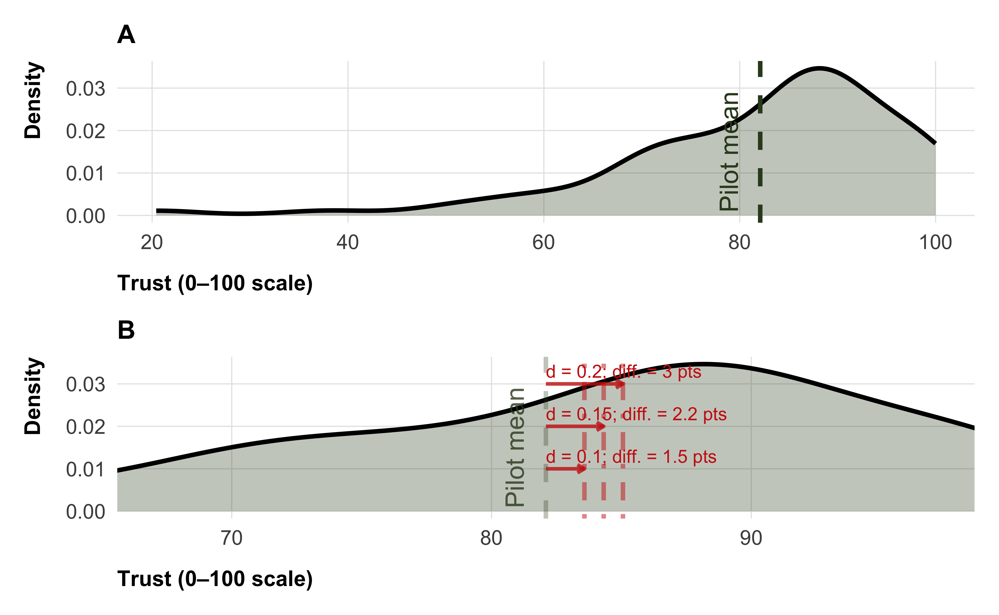
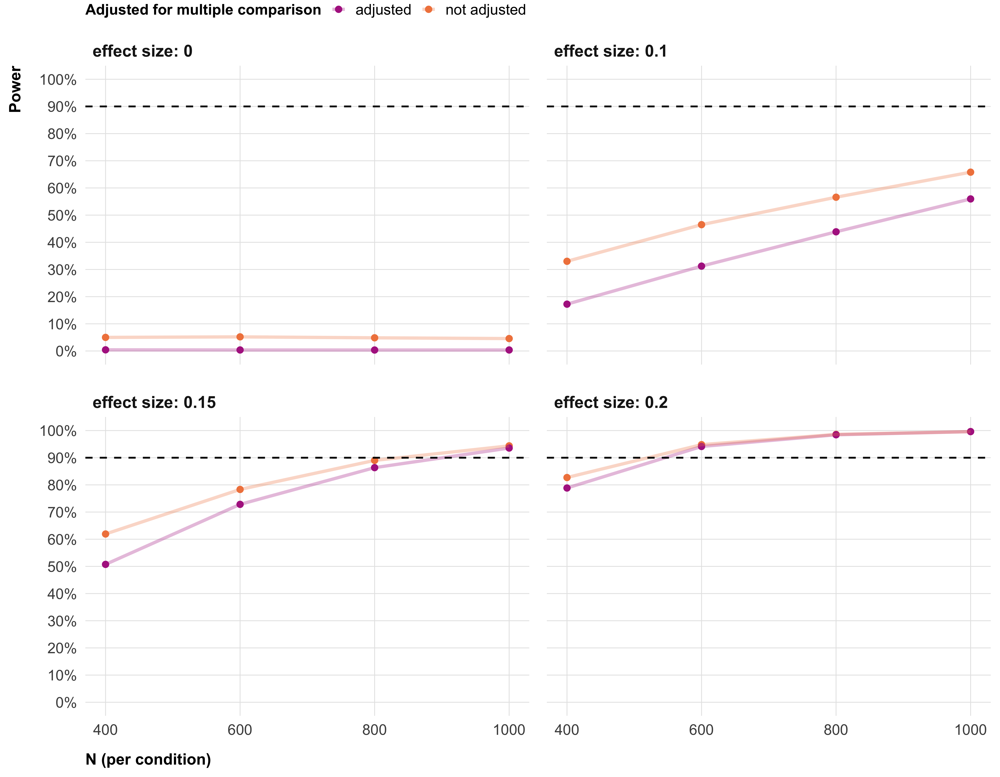
Analysis plan
Exclusions
First, we do not allow for any individual participant taking part in our study several times. In cases with a duplicated participant ID, we will only keep the first case. Second, we will exclude participants who failed a series of attention and bot detection checks. These checks will be run before treatment assignment to avoid post-treatment bias (Montgomery, Nyhan, and Torres 2018).
Treatment effects
We will test the effects of each of the treatments relative to the control condition with ordinary least squares regression. We will use heteroskedasticity-robust standard errors to ensure valid statistical inference in the presence of potentially unequal error variances across experimental conditions.
For all outcome variables, we will separately regress each post-treatment outcome on a categorical variable for experimental condition, using the control condition as the baseline category. The categorical condition variable will be represented as a series of dummy variables, one for each of the 20 interventions, with the control condition as the omitted reference category. To reduce residual variance and increase statistical power, we will include age, gender, and race as covariates in all models. These variables are used to implement sampling quotas and are therefore mandatory—they have no missing values and their inclusion carries no risk of reducing the analyzed sample size. We do not include other pre-treatment variables (e.g., single-item trust in climate change or belief in climate change) as covariates, even though they would likely explain additional outcome variance, because they are not mandatory and may have missing values. Including covariates with missing values causes listwise deletion3, which could significantly reduce the analyzed sample size.
For all continuous outcome variables, we estimate the following ordinary least squares (OLS) model.4
\[Y_i = \beta_0 + \sum_{k=1}^{K} \beta_k \, D_{ik} + \mathbf{X}_i \boldsymbol{\gamma} + \varepsilon_i,\]
where \(Y_i\) is a continuous outcome, \(D_{ik}\) is a binary variable equal to 1 if participant \(i\) was assigned to intervention \(k\), and 0 otherwise. The main control condition serves as the omitted reference category. \(\mathbf{X}_i\) denotes the vector of covariates (gender, age, race), and \(\varepsilon_i\) is an error term. All models are estimated using ordinary least squares with heteroskedasticity-robust standard errors. All statistical tests are two-sided.
For each outcome, we test the null hypothesis \(H_0: \beta_k = 0\) for each intervention \(k\), corresponding to no difference relative to the control condition. To account for multiple comparisons, we adjust p-values using the Benjamini–Hochberg (or false discovery rate, FDR) procedure across the 20 intervention-vs-control comparisons within each outcome separately. Although not all megastudies do this (e.g., Voelkel et al. 2024, 2026), researchers have stressed the importance of accounting for multiple comparison between the different treatment arms in megastudies (Milkman et al. 2021; Milkman et al. 2022). In line with other megastudies, we will not apply additional corrections for multiple comparison across the different outcomes, as we consider each outcome as an independent test.
run_main_treatment_model <- function(data,
outcome,
condition_var = "condition",
covariates = NULL,
weights = NULL,
adjust_method = "BH") {
# Formula
rhs <- paste(c(condition_var, covariates), collapse = " + ")
model_formula <- as.formula(paste(outcome, "~", rhs))
# Baseline (control) level
baseline <- levels(data[[condition_var]])[1]
# Fit
fit <- lm(
model_formula,
data = data,
weights = if (!is.null(weights)) data[[weights]] else NULL
)
# Robust VCOV (HC2)
vcov_robust <- sandwich::vcovHC(fit, type = "HC2")
results <- lmtest::coeftest(fit, vcov = vcov_robust) |>
broom::tidy(conf.int = TRUE) |>
filter(str_detect(term, paste0("^", condition_var))) |>
mutate(
outcome = outcome,
condition = str_remove(term, condition_var),
baseline = baseline,
p.value_adjusted = p.adjust(p.value, method = adjust_method),
significant_adjusted = case_when(
p.value_adjusted < .001 ~ "***",
p.value_adjusted < .01 ~ "**",
p.value_adjusted < .05 ~ "*",
TRUE ~ NA_character_
)
) |>
select(-term)
return(results)
}# check if the main control condition is correctly assigned to be the baseline
# levels(data$condition)
# calculate results for all outcome variables
main_model_results <- map_df(
outcomes,
~ run_main_treatment_model(
data = data,
outcome = .x,
condition_var = "condition",
covariates = covariates
)
)Figure 3 shows a possible presentation of the estimated treatment effects for all outcome variables. We will present detailed model results in the appendix (see Table 5).
Binary outcome: newsletter signup
Newsletter signup is a binary outcome and is therefore modeled separately from the continuous outcomes. We estimate the effect of each intervention on the probability of signing up for a climate science newsletter using logistic regression. As with the continuous outcomes, we include gender, age, and race as covariates. Formally, our model is:
\[\log \left( \frac{P(Y_i = 1)}{1 - P(Y_i = 1)} \right) = \beta_0 + \sum_{k=1}^{K} \beta_k \, D_{ik} + \mathbf{X}_i \boldsymbol{\gamma} + \varepsilon_i\]
where \(P(Y_i = 1)\) is the probability of signing up for the newsletter. Coefficients are estimated on the log-odds scale. To facilitate interpretation, we report the average difference in predicted signup probability between each intervention and the control condition, computed on the probability scale using the marginaleffects package in R (Arel-Bundock, Greifer, and Heiss 2024), which handles the transformation of coefficients and standard errors from the log-odds scale to the probability scale. All estimates use heteroskedasticity-robust standard errors (HC2), and p-values are adjusted using the Benjamini–Hochberg procedure across the 20 intervention-vs-control comparisons.
run_main_treatment_model_binary <- function(data,
outcome,
condition_var = "condition",
covariates = NULL,
weights = NULL,
adjust_method = "BH") {
rhs <- paste(c(condition_var, covariates), collapse = " + ")
model_formula <- as.formula(paste(outcome, "~", rhs))
baseline <- levels(data[[condition_var]])[1]
fit <- glm(
model_formula,
data = data,
family = binomial(link = "logit"),
weights = if (!is.null(weights)) data[[weights]] else NULL
)
vcov_robust <- sandwich::vcovHC(fit, type = "HC2")
# Log-odds results — for inference
log_odds <- lmtest::coeftest(fit, vcov = vcov_robust) |>
broom::tidy(conf.int = TRUE) |>
filter(str_detect(term, paste0("^", condition_var))) |>
mutate(
outcome = outcome,
condition = str_remove(term, condition_var),
baseline = baseline,
p.value_adjusted = p.adjust(p.value, method = adjust_method),
significant_adjusted = case_when(
p.value_adjusted < .001 ~ "***",
p.value_adjusted < .01 ~ "**",
p.value_adjusted < .05 ~ "*",
TRUE ~ NA_character_
),
odds_ratio = exp(estimate),
or_conf.low = exp(conf.low),
or_conf.high = exp(conf.high)
) |>
select(-term)
# Marginal effects — for interpretation (probability scale)
marginal_effects <- marginaleffects::avg_comparisons(
fit,
variables = condition_var,
vcov = vcov_robust,
newdata = data |> select(all_of(c(outcome, condition_var, covariates)))
) |>
as_tibble() |>
select(contrast, estimate, conf.low, conf.high, p.value) |>
mutate(
condition = str_extract(contrast, "intervention_\\d+"),
outcome = outcome,
baseline = baseline,
p.value_adjusted = p.adjust(p.value, method = adjust_method),
significant_adjusted = case_when(
p.value_adjusted < .001 ~ "***",
p.value_adjusted < .01 ~ "**",
p.value_adjusted < .05 ~ "*",
TRUE ~ NA_character_
)
)
list(
log_odds = log_odds,
marginal_effects = marginal_effects
)
}# calculate results for all outcome variables
main_model_newsletter_signup <- run_main_treatment_model_binary(
data = data,
outcome = "newsletter_signup",
covariates = covariates
)A possible visualization of the treatment effects on newsletter signup can be found in Figure 3.

Attrition and missing values
We define attrition as a case where a participant does not respond to an outcome measure. There are two cases of attrition: First, a participant drops out of the survey, i.e. does not finish it. We allow for that at any time of the survey. Second, a participant completes the survey, but does not answer all questions. This is possible, as we do not force responses, with the exception of quota relevant variables.
The above definition of attrition is outcome based: A participant who has missing values for one or multiple outcome measures will still be included in the analyses on all outcome measures for which they provided data. For example, a participant might have answered the main multi-dimensional trust measure and will be considered a complete case for all analyses regarding this variable. But the same participant might not have answered the donation outcome question, and will be treated as a missing value for all analyses regarding that variable. We will report missing values for all key variables, along with other descriptive statistics (see Table 4 for an example).
Running a study on a large sample with many experimental conditions, it is likely that we will face the issue of differential attrition—when, after treatment assignment, the attrition rate differs systematically between experimental conditions. Differential attrition can bias estimates of treatment effects. To illustrate, consider the following scenario: Some interventions might require more effort from participants than others (e.g., interacting with a chatbot vs. reading a short text). Participants who are generally not willing to make much of an effort might drop out of high-effort treatment conditions, but not the low-effort conditions. Suppose that, in general, those participants who are not willing to make an effort also tend to trust climate scientists less. Now, these participants would drop out in the high-effort conditions, but not in the low-effort ones. As a consequence, a naive estimate of the treatment effect for the high-effort conditions will be overestimated—all the low-trust participants who were not willing to make an effort dropped out and do not count into the high-effort conditions average, while they do count into the average of low-effort conditions.
Tests for differential attrition
To test for differential attrition, we follow procedures established in prior megastudies (Voelkel et al. 2024, 2026). We implement two complementary tests.
First, we estimate whether the number of missing responses differs between conditions. We run a linear probability model in which a binary indicator for study completion is regressed on experimental condition. We then conduct a heteroskedasticity-robust F-test of the joint hypothesis that attrition rates in all treatment conditions equal the attrition rate in the control condition.
run_attrition_f_test <- function(data,
outcome,
condition_var = "condition") {
# Completion indicator for the specific outcome
model_data <- data %>%
mutate(
completed = if_else(
is.na(.data[[outcome]]),
FALSE,
TRUE,
),
completed_numeric = as.numeric(completed)
)
# skip test if no variation (i.e. if everyone completed/attrited)
if(length(unique(model_data$completed)) < 2){
return(tibble(outcome = outcome, Chi2 = NA_real_, p_value = NA_real_))
}
formula <- as.formula(paste("completed ~", condition_var))
model <- lm(formula, data = model_data)
# Only the coefficients for the condition variable (not the intercept)
test_terms <- grep(condition_var, names(model$coefficients), value = TRUE)
f_test <- car::linearHypothesis(model, test_terms, white.adjust = "hc2")
tibble(
outcome = outcome,
F_statistic = f_test$F[2],
p_value = f_test$`Pr(>F)`[2]
)
}# Run attrition test 1: Condition only
attrition_f_results <- map_df(
outcomes,
~ run_attrition_f_test(
data = data,
outcome = .x
)
)
# check
# attrition_f_resultsSecond, we test whether characteristics of participants with missing values differ between conditions (heterogenous attrition). This second test is important, because even if overall attrition rates are similar, the composition of who drops out could be affected by treatment assignment. For this test, we add to the linear probability model from the first test a set of covariates and their interactions with experimental condition. These covariates will be the same we will later use to account for differential attrition (if necessary). Their selection process is described in the next section. We again conduct a heteroskedasticity-robust F-test, this time testing whether all condition-by-covariate interaction terms are jointly equal to zero.
run_attrition_interactions <- function(data,
outcome,
condition_var = "condition",
covariates) {
# Completion indicator
model_data <- data %>%
mutate(
completed = if_else(
is.na(.data[[outcome]]),
FALSE,
TRUE,
),
completed_numeric = as.numeric(completed)
)
# Skip if no variation
if(length(unique(model_data$completed)) < 2){
return(tibble(outcome = outcome,
covariate = covariates,
F_statistic = NA_real_,
p_value = NA_real_))
}
# Loop over covariates
interaction_tests <- covariates %>%
map_df(function(cov) {
# Build formula for condition * covariate
formula <- as.formula(paste0("completed ~ ", condition_var, " * ", cov))
model <- lm(formula, data = model_data)
# Identify interaction terms (condition:covariate)
interaction_terms <- grep(":", names(coef(model)), value = TRUE)
# Skip if no interaction terms
if(length(interaction_terms) == 0){
return(tibble(outcome = outcome,
covariate = cov,
F_statistic = NA_real_,
p_value = NA_real_))
}
# Joint F-test with robust SE
f_test <- car::linearHypothesis(model,
interaction_terms,
white.adjust = "hc1")
tibble(
outcome = outcome,
covariate = cov,
F_statistic = f_test$F[2],
p_value = f_test$`Pr(>F)`[2]
)
}) |>
# adjust for multiple comparison
mutate(adjusted_p.value = p.adjust(p_value, method = "BH"))
return(interaction_tests)
}# Run attrition test 2: Condition × Covariates
attrition_interaction_results <- map_df(
outcomes_illustrative,
~ run_attrition_interactions(
data = data,
outcome = .x,
covariates = covariates
)
)
# check
# attrition_interaction_resultsAccount for differential attrition
In line with other megastudies (Voelkel et al. 2024, 2026), if we find evidence of heterogenous differential attrition, we will use inverse-probability weighting (IPW) for all our analyses.
IPW adjusts the analysis by upweighting participants who completed the study but resemble those who dropped out (or, more generally, have missing values for a particular outcome), based on their observed characteristics. Specifically, we model the probability of completing the study as a function of a set of pre-treatment covariates using a random forest classifier. We use a random forest because it flexibly captures nonlinear relationships and interactions between predictors without requiring model specification decisions. The predicted completion probability for each participant is then used to compute inverse probability weights, which are passed to the weighted regression models.
IPW relies on one key assumption: conditional on the observed covariates included in the weighting model, attrition is independent of participants’ potential outcomes. In other words, after accounting for measured pre-treatment characteristics, whether a participant drops out is unrelated to what their outcome would have been. This assumption implies that all systematic predictors of attrition that are also related to the outcome must be observed and included in the weighting model. If attrition depends on unmeasured factors that also affect the outcome, IPW cannot fully eliminate bias. While this assumption cannot be tested directly and may not hold perfectly in practice, including a broad set of pre-treatment covariates in the weighting model reduces the risk of residual confounding. We therefore interpret IPW-adjusted estimates as reducing—but not necessarily eliminating—concerns about bias due to differential attrition.
However, there is a trade-off in how many covariates to include in the IPW weighting model. On the one hand, IPW is less biased when based on more predictor variables. On the other hand, covariates with missing values pose a practical challenge: a weighting model that relies on complete cases only assigns weights to the subset of participants with valid responses on all covariates. Participants without weights are excluded from IPW-weighted analyses—though they remain included in the unweighted analyses. The tradeoff is thus between more accurate weights based on a larger covariate set but estimated in a reduced sample, versus less accurate weights based only on fully observed variables (i.e., the quota-relevant variables gender, age, and race) but estimated in the full sample.
We resolve this trade-off as follows. As a baseline, we always include condition, gender, age, and race, as these are mandatory and have no missing values. Beyond these, we include up to three additional pre-treatment variables—single-item trust in climate scientists, partisan identity, and education level—provided their individual missingness rate does not exceed 5% in the final sample5. We expect these three additional variables to be related both to attrition and our outcome variables. We cap the number of additional variables at three to limit maximum sample loss from listwise deletion to approximately 15%. In practice, sample loss is likely lower than this upper bound, as missingness across optional questions tends to be correlated—participants who skip one question tend to skip others, too. Should any of the additional variables exceed the 5% threshold, we will exclude them from the weighting model.
# baseline predictors (mandatory, always included)
baseline_predictors <- c("gender", "age", "race")
# candidate additional predictors
candidate_predictors <- c("trust_pre", "party", "education")
# check missingness rates
missingness <- data |>
summarise(across(all_of(candidate_predictors),
~ mean(is.na(.x)))) |>
pivot_longer(everything(),
names_to = "variable",
values_to = "missingness_rate")
# build final weight predictor list
additional_predictors <- missingness |>
filter(missingness_rate < 0.05) |>
pull(variable)
weight_predictors <- c(baseline_predictors, additional_predictors)| variable | missingness_pct | included_in_ipw |
|---|---|---|
| trust_pre | 0.0% | Yes |
| party | 0.0% | Yes |
| education | 0.0% | Yes |
get_ipw_weights_rf <- function(data,
outcome,
condition_var = "condition",
weight_predictors,
ntree = 200) {
# Completion indicator
dat <- data |>
mutate(
completed = factor(
!is.na(.data[[outcome]]),
levels = c(FALSE, TRUE),
labels = c("no", "yes")
)
)
# Build formula explicitly
predictors <- c(condition_var, weight_predictors)
rf_formula <- as.formula(
paste("completed ~", paste(predictors, collapse = " + "))
)
# Fit random forest
rf_model <- randomForest::randomForest(
formula = rf_formula,
data = dat,
importance = TRUE,
ntree = ntree,
na.action = na.exclude # safety net for any remaining NAs
)
# Predicted probability of completion
p_complete <- predict(rf_model, newdata = dat, type = "prob")[, "yes"]
# Inverse probability weights + trimming at 99th percentile
dat <- dat |>
mutate(
p_complete = p_complete,
ipw = 1 / p_complete,
ipw_trimmed = pmin(ipw, quantile(ipw, 0.99))
)
return(dat)
}# set a seed to make random forest procedure reproducible
set.seed(28367)
run_all_outcomes_ipw <- function(data,
outcomes,
condition_var = "condition",
weight_predictors,
covariates = NULL) {
purrr::map_df(outcomes, function(outcome) {
# --- Unweighted main model
main_unweighted <- run_main_treatment_model(
data = data,
outcome = outcome,
condition_var = condition_var,
covariates = covariates
) %>%
mutate(model = "Unweighted")
# --- IPW weights via random forest
dat_ipw <- get_ipw_weights_rf(
data = data,
outcome = outcome,
condition_var = condition_var,
weight_predictors = weight_predictors
)
# --- Weighted robustness model
main_weighted <- run_main_treatment_model(
data = dat_ipw,
outcome = outcome,
condition_var = condition_var,
covariates = covariates,
weights = "ipw"
) %>%
mutate(model = "IPW")
bind_rows(main_unweighted, main_weighted)
})
}
# run robustness analysis that compares ipw and unweighted
results_ipw <- run_all_outcomes_ipw(
data = data,
outcomes = outcomes_illustrative,
weight_predictors = weight_predictors,
covariates = covariates
)If we use IPW due to differential attrition, we will also report how it compares to results without using IPW in the supplemental materials (see Figure 9 for a possible illustration).
Moderators
We will examine whether the effects of the interventions vary as a function of a set of moderator variables assessed prior to treatment, including demographic variables, political identity, religion, and belief in climate change. Specifically, our moderator variables are:
- age
- gender
- race
- education
- income
- household_size
- social_class
- urban_rural
- party
- religion
- born_again
- religiosity
- belief_pre
- trust_preModerator analyses will be conducted separately for each moderator and each outcome. To estimate moderator effects, we will add the moderator variable as an interaction term to the OLS regression used to assess the main treatment effects. We will not add any covariates. As for the main treatment effect, we use heteroskedasticity-robust standard errors. We account for multiple comparisons using the Benjamini–Hochberg procedure, applied separately within each combination of moderator and outcome. For continuous moderators, p-values are adjusted across the 20 intervention-specific slopes; for categorical moderators, p-values are adjusted across all interaction terms (20 interventions × number of moderator levels minus one).
Formally, for a given outcome \(Y_i\) and moderator \(M_i\), we estimate the following model:
\[Y_i = \beta_0 + \sum_{k=1}^{K} \beta_k D_{ik} + \delta M_i + \sum_{k=1}^{K} \theta_k (D_{ik} \times M_i) + \varepsilon_i,\]
where:
- \(Y_i\) is the outcome variable for participant \(i\) (e.g., trust in climate scientists).
- \(\beta_0\) is the intercept, representing the expected outcome in the main control condition when all covariates and the moderator equal zero.
- \(D_{ik}\) is a dummy variable equal to 1 if participant \(i\) was assigned to intervention \(k\), and 0 otherwise. The main control condition serves as the omitted reference category, and the interactive control condition is excluded from the estimation sample.
- \(\beta_k\) captures the average effect of intervention \(k\) relative to the control condition when the moderator equals zero.
- \(M_i\) is the moderator variable of interest.
- \(\delta\) captures the association between the moderator and the outcome in the control condition.
- \(D_{ik} \times M_i\) denotes the interaction between intervention \(k\) and the moderator.
- \(\theta_k\) captures how the effect of intervention \(k\) changes as a function of the moderator.
- \(\boldsymbol{\gamma}\) is the corresponding vector of coefficients for the covariates.
- \(\varepsilon_i\) is an error term capturing unexplained variation in the outcome.
run_moderator_model <- function(data,
outcome,
moderator,
condition_var = "condition",
covariates = NULL,
weights = NULL,
adjust_method = "BH") {
rhs <- paste(c(paste0(condition_var, " * ", moderator), covariates),
collapse = " + ")
model_formula <- as.formula(paste(outcome, "~", rhs))
baseline <- levels(data[[condition_var]])[1]
fit <- lm(
model_formula,
data = data,
weights = if (!is.null(weights)) data[[weights]] else NULL
)
vcov_robust <- sandwich::vcovHC(fit, type = "HC2")
interaction_effects <- lmtest::coeftest(fit, vcov = vcov_robust) |>
broom::tidy(conf.int = TRUE) |>
filter(str_detect(term, ":")) |>
mutate(
baseline = baseline,
condition = str_extract(term, "intervention_\\d+"),
moderator_level = str_remove(str_extract(term, "(?<=:).+"), moderator),
p.value_adjusted = p.adjust(p.value, method = adjust_method),
significant_adjusted = case_when(
p.value_adjusted < .001 ~ "***",
p.value_adjusted < .01 ~ "**",
p.value_adjusted < .05 ~ "*",
TRUE ~ NA_character_
)
)
is_numeric_mod <- is.numeric(data[[moderator]])
if (!is_numeric_mod) {
predicted_effects <- marginaleffects::avg_comparisons(
fit,
variables = condition_var,
by = moderator,
vcov = vcov_robust,
newdata = "mean"
) |>
as_tibble() |>
mutate(
condition = str_extract(contrast, "intervention_\\d+"),
moderator_level = .data[[moderator]],
baseline = baseline,
p.value_adjusted = p.adjust(p.value, method = adjust_method),
significant_adjusted = case_when(
p.value_adjusted < .001 ~ "***",
p.value_adjusted < .01 ~ "**",
p.value_adjusted < .05 ~ "*",
TRUE ~ NA_character_
)
) |>
filter(!is.na(condition)) |>
select(condition, moderator_level, estimate, conf.low, conf.high,
p.value, p.value_adjusted, significant_adjusted, baseline)
}
if (is_numeric_mod) {
predicted_effects <- marginaleffects::comparisons(
fit,
variables = condition_var,
vcov = vcov_robust,
newdata = do.call(
marginaleffects::datagrid,
c(list(model = fit),
setNames(list(fivenum(data[[moderator]])), moderator))
)
) |>
as_tibble() |>
mutate(
condition = str_extract(contrast, "intervention_\\d+"),
moderator_value = .data[[moderator]],
baseline = baseline,
p.value_adjusted = p.adjust(p.value, method = adjust_method),
significant_adjusted = case_when(
p.value_adjusted < .001 ~ "***",
p.value_adjusted < .01 ~ "**",
p.value_adjusted < .05 ~ "*",
TRUE ~ NA_character_
)
) |>
filter(!is.na(condition)) |>
select(condition, moderator_value, estimate, conf.low, conf.high,
p.value, p.value_adjusted, significant_adjusted, baseline)
}
list(
interaction_effects = interaction_effects,
predicted_effects = predicted_effects
)
}# run moderator models for all outcomes × moderators
moderator_results_list <- expand_grid(
outcome = outcomes_illustrative,
moderator = moderators_illustrative
) |>
mutate(
results = map2(
outcome, moderator,
~ run_moderator_model(
data = data,
outcome = .x,
moderator = .y,
covariates = NULL
)
)
)
# extract interaction effects
moderator_results <- moderator_results_list |>
mutate(results = map(results, "interaction_effects")) |>
unnest(results)
# extract predicted effects
moderator_results_predicted <- moderator_results_list |>
mutate(results = map(results, "predicted_effects")) |>
unnest(results)In the manuscript, we will focus on moderator effects regarding our main outcome, trust in climate scientists. In the supplemental material, we will report moderator effects on all secondary and tertiary outcomes. For categorical moderators, we will visualize the predicted treatment effects per category in the manuscript (Figure 4). For example, for gender, we will visualize the predicted treatment effect for men, women, and other. We will report whether the differences between these categories—the moderator effect, or interaction term from the model—are significant. For continuous moderators, we will visualize the interaction term, i.e. the estimated changes in the treatment effects per unit increase in the moderator (Figure 5). We will provide detailed tables of the interaction terms for all moderators on all outcomes in the supplemental materials (see, e.g., Table 6).

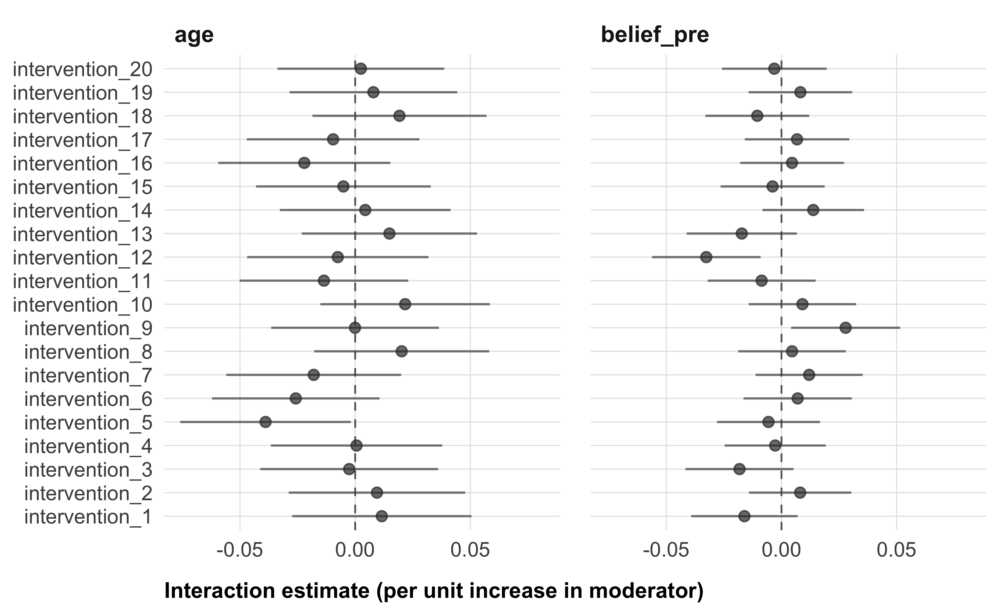
Partisan identity and importance
Given the well-documented partisan gap in trust in climate scientists and attitudes toward science more broadly, we treat partisan identity as a separate case in our moderator analyses. We conduct two related analyses. First, we examine whether treatment effects differ across party lines (in the same way, as for other categorical moderator variables). Second, we examine the role of partisan importance—how important being a supporter of a party is to participants. We expect this variable to operate differently across parties: among Republicans, stronger partisan identity likely reinforces skepticism toward scientific institutions, potentially dampening intervention effects; among Democrats, the same identification may reinforce receptivity to pro-science messaging. We therefore estimate the partisan importance model separately for Republicans and Democrats, allowing us to test whether the strength of partisan cue-taking within each party moderates intervention effectiveness.
For the partisan importance analysis, although models are estimated on separate subsamples, we treat both as part of a single conceptual family of tests. BH adjustment is therefore applied jointly across both subsamples — that is, across 40 comparisons (20 interventions × 2 parties) per outcome — resulting in more conservative p-values than within-party adjustment alone would produce.
# partisan importance moderator — run separately for Republicans and Democrats
# run models for both parties
moderator_results_partisan_importance <- expand_grid(
outcome = outcomes_illustrative,
party = c("Republican", "Democrat")
) |>
mutate(
results = map2(
outcome, party,
~ run_moderator_model(
data = data |> filter(party == .y),
outcome = .x,
moderator = "party_importance",
covariates = covariates
)$interaction_effects
)
) |>
unnest(results) |>
# override p.value_adjusted: BH across both parties jointly
# family = 40 comparisons (20 interventions × 2 parties) per outcome
group_by(outcome) |>
mutate(
p.value_adjusted = p.adjust(p.value, method = "BH"),
significant_adjusted = case_when(
p.value_adjusted < .001 ~ "***",
p.value_adjusted < .01 ~ "**",
p.value_adjusted < .05 ~ "*",
TRUE ~ NA_character_
)
) |>
ungroup()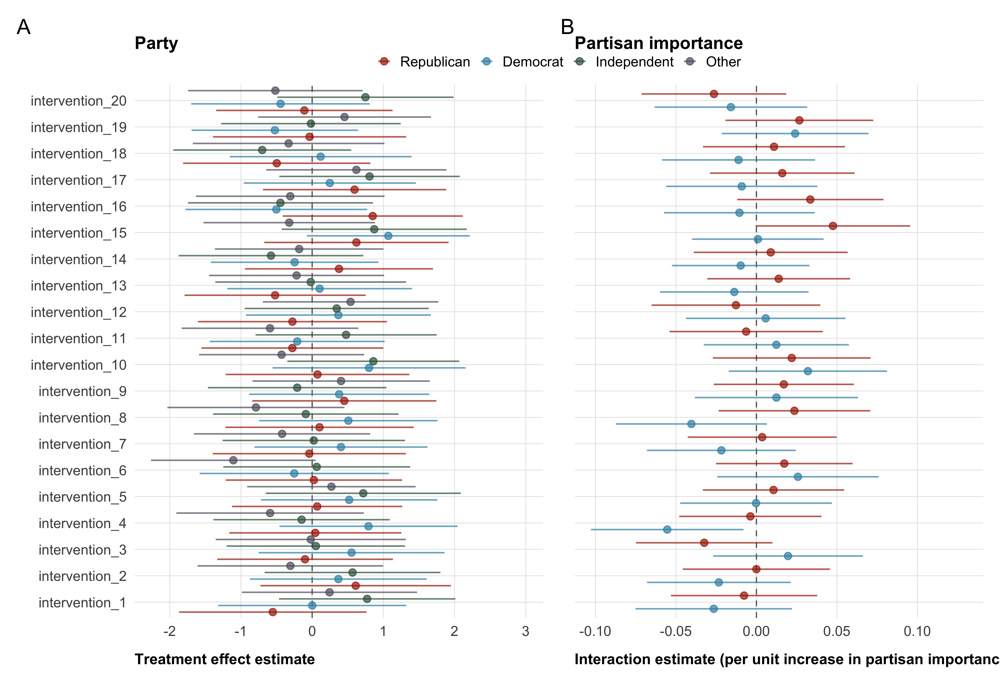
Persistence
We will test whether treatment effects observed in the experiment persist with a follow-up survey, fielded one week after the end of data collection of the experiment. We will run two tests of persistence: First, we test whether treatment effects remain present in the follow-up survey. This corresponds to running the same model as for the main treatment effects in the experiment, but on the data from the follow-up survey. Second, we test whether the follow-up effects are statistically different from the main survey effects.
# combine surveys
data_followup <- data_followup |>
mutate(time = "follow_up") |>
left_join(data |> select(id, condition), by = "id")
followup_conditions <- unique(data_followup$condition)
data_reduced <- data |>
filter(condition %in% followup_conditions) |>
droplevels() |>
mutate(time = "experiment")
data_followup <- data_reduced |>
select(id,
condition,
all_of(demographics),
all_of(covariates),
all_of(moderators),
) |>
left_join(
data_followup |> select(-condition), # drop condition from data_followup
by = "id"
)
# merge data sets (reduced conditions)
merged_data <- data_reduced |>
bind_rows(data_followup) |>
mutate(
time = relevel(factor(time), ref = "experiment")
)We can run both tests from the a single interaction model, combining the data from the experiment and the follow-up survey. We will stack the main and follow-up survey data into a long-format panel dataset and estimate linear regression models including a treatment × wave interaction term. Standard errors will be clustered at the participant level to account for repeated observations across waves.
Formally, our model for testing persistence is:
\[Y_{it} = \beta_0 + \sum_{k=1}^{K} \beta_k \, D_{ik} + \beta_T \, Time_t + \sum_{k=1}^{K} \beta_{kT} (D_{ik} \times Time_t) + \varepsilon_{it}\]
where
- \(Y_{it}\) is the outcome for participant \(i\) at time \(t\) (experiment = 0, follow-up = 1).
- \(D_{ik}\) are dummies for intervention \(k\), with the main control condition as reference.
- \(Time_t\) indicates experiment (0) vs. follow-up (1).
- \(\beta_k\) = treatment effect in the experiment sample, for the reduced sample of participants who also completed the follow-up.
- \(\beta_{kT}\) = change in effect; statistical test of persistence.
- \(\beta_k + \beta_{kT}\) = treatment effect in the follow-up sample.
As in the experiment, we will test for attrition, and for differential attrition, in the follow-up survey.
# Check baseline condition
# levels(data_followup$condition)
# Run attrition test 1: Condition only
attrition_f_results <- map_df(
outcomes_illustrative,
~ run_attrition_f_test(
data = data_followup,
outcome = .x
)
)
# check
# attrition_f_results# Run attrition test 2: Condition × Covariates
attrition_interaction_results <- map_df(
outcomes_illustrative,
~ run_attrition_interactions(
data = data_followup,
outcome = .x,
covariates = covariates
)
)
# check
# attrition_interaction_resultsShould we find evidence of differential attrition, we will address it using inverse probability of retention weights (IPW), estimated separately for the follow-up survey. We will use the same random forest approach, with the same weight predictors, as described above for the experiment. The data from the follow-up survey will contain all participants from the experiment, with NA on all follow-up outcomes if they did not respond. Therefore, our completion estimate not only captures who completed the follow-up survey, but also who took to the follow-up survey at all. We estimate IPW separately for experiment and follow-up because attrition patterns may differ between two, and IPW is intended to address these different patterns. As a result, a participant who completed both the experiment and the follow-up survey may receive different weights in the two data sets.
run_persistence_model <- function(data,
outcome,
condition_var = "condition",
covariates = NULL,
weights = NULL,
id_var = "id",
time_var = "time",
adjust_method = "BH") {
# Formula: condition × time interaction
rhs <- paste(c(paste0(condition_var, " * ", time_var),
covariates),
collapse = " + ")
model_formula <- as.formula(paste(outcome, "~", rhs))
# Baseline (control) level
baseline <- levels(data[[condition_var]])[1]
# Fit
fit <- lm(
model_formula,
data = data,
weights = if (!is.null(weights)) data[[weights]] else NULL
)
# Cluster-robust VCOV at participant level
vcov_clustered <- sandwich::vcovCL(fit,
cluster = as.formula(paste0("~", id_var)
)
)
# Interaction terms (condition × time)
interaction_effects <- lmtest::coeftest(fit, vcov = vcov_clustered) |>
broom::tidy(conf.int = TRUE) |>
filter(str_detect(term, ":")) |>
mutate(
baseline = baseline,
outcome = outcome,
condition = str_extract(term, "intervention_\\d+"),
p.value_adjusted = p.adjust(p.value, method = adjust_method),
significant_adjusted = case_when(
p.value_adjusted < .001 ~ "***",
p.value_adjusted < .01 ~ "**",
p.value_adjusted < .05 ~ "*",
TRUE ~ NA_character_
)
)
# Predicted effects within each wave
predicted_effects <- marginaleffects::avg_comparisons(
fit,
variables = condition_var,
by = time_var,
vcov = vcov_clustered,
newdata = "mean"
) |>
as_tibble() |>
mutate(
condition = str_extract(contrast, "intervention_\\d+"),
baseline = baseline,
outcome = outcome,
p.value_adjusted = p.adjust(p.value, method = adjust_method),
significant_adjusted = case_when(
p.value_adjusted < .001 ~ "***",
p.value_adjusted < .01 ~ "**",
p.value_adjusted < .05 ~ "*",
TRUE ~ NA_character_
)
) |>
filter(!is.na(condition)) |>
select(condition, !!time_var := .data[[time_var]],
estimate, conf.low, conf.high,
p.value, p.value_adjusted, significant_adjusted,
baseline, outcome)
list(
interaction_effects = interaction_effects,
predicted_effects = predicted_effects
)
}# run persistence model on all continuous outcomes
followup_results_list <- map(
outcomes_illustrative,
~ run_persistence_model(
data = merged_data,
outcome = .x,
covariates = covariates
)
)
followup_results_predicted <- map_df(followup_results_list,
"predicted_effects") |>
filter(condition %in% followup_conditions)
followup_results_interaction <- map_df(followup_results_list,
"interaction_effects") |>
filter(condition %in% followup_conditions)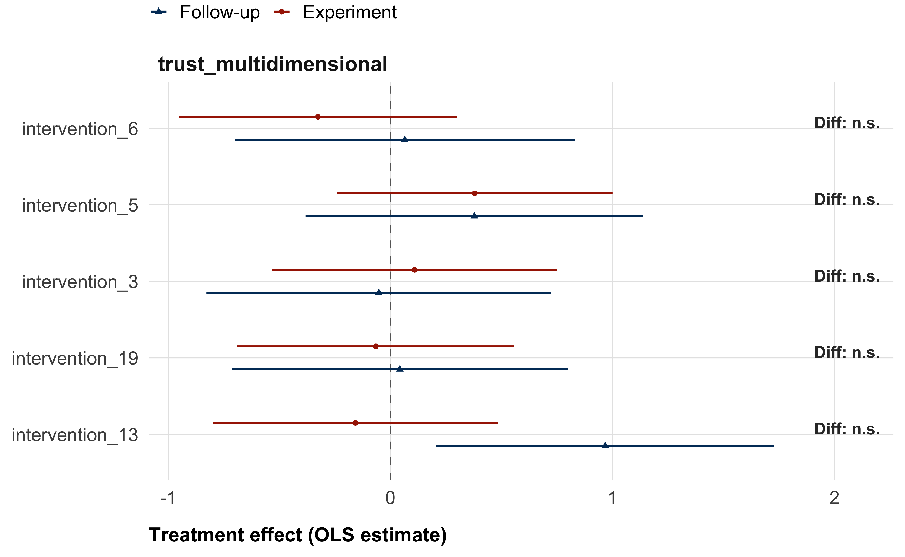
Data and code availability
All code used in this pre-registration and related simulations, as well as all simulated data, is available on GitHub.
References
Agley, Jon, Yunyu Xiao, Esi E Thompson, Xiwei Chen, and Lilian Golzarri-Arroyo. 2021. “Intervening on Trust in Science to Reduce Belief in COVID-19 Misinformation and Increase COVID-19 Preventive Behavioral Intentions: Randomized Controlled Trial.” Journal of Medical Internet Research 23 (10): e32425. https://doi.org/10.2196/32425.
Arel-Bundock, Vincent, Noah Greifer, and Andrew Heiss. 2024. “How to Interpret Statistical Models Using Marginaleffects for R and Python.” Journal of Statistical Software 111 (November): 1–32. https://doi.org/10.18637/jss.v111.i09.
Bles, Anne Marthe van der, Sander van der Linden, Alexandra L. J. Freeman, and David J. Spiegelhalter. 2020. “The Effects of Communicating Uncertainty on Public Trust in Facts and Numbers.” Proceedings of the National Academy of Sciences 117 (14): 7672–83. https://doi.org/10.1073/pnas.1913678117.
Bogert, J. M., Buczny ,J., Harvey ,J. A., and J. and Ellers. 2024. “The Effect of Trust in Science and Media Use on Public Belief in Anthropogenic Climate Change: A Meta-Analysis.” Environmental Communication 18 (4): 484–509. https://doi.org/10.1080/17524032.2023.2280749.
Calvin, Katherine, Dipak Dasgupta, Gerhard Krinner, Aditi Mukherji, Peter W. Thorne, Christopher Trisos, José Romero, et al. 2023. “IPCC, 2023: Climate Change 2023: Synthesis Report. Contribution of Working Groups I, II and III to the Sixth Assessment Report of the Intergovernmental Panel on Climate Change [Core Writing Team, H. Lee and J. Romero (Eds.)]. IPCC, Geneva, Switzerland.” https://doi.org/10.59327/IPCC/AR6-9789291691647.
Cologna, Viktoria, Niels G. Mede, Sebastian Berger, John Besley, Cameron Brick, Marina Joubert, Edward W. Maibach, et al. 2025. “Trust in Scientists and Their Role in Society Across 68 Countries.” Nature Human Behaviour, January, 1–18. https://doi.org/10.1038/s41562-024-02090-5.
Cologna, Viktoria, and Michael Siegrist. 2020. “The Role of Trust for Climate Change Mitigation and Adaptation Behaviour: A Meta-Analysis.” Journal of Environmental Psychology 69 (June): 101428. https://doi.org/10.1016/j.jenvp.2020.101428.
Druckman, James N., Katherine Ognyanova, Alauna Safarpour, Jonathan Schulman, Kristin Lunz Trujillo, Ata Aydin Uslu, Jon Green, et al. 2025. “Representation in Science and Trust in Scientists in the USA.” Nature Human Behaviour, December. https://doi.org/10.1038/s41562-025-02358-4.
Druckman, James N., Jonathan Schulman, Alauna C. Safarpour, Matthew Baum, Katherine Ognyanova, Mailbox Kenny, Kristin Lunz Trujillo, et al. 2024. “Continuity and Change in Trust in Scientists in the United States: Demographic Stability and Partisan Polarization.” https://doi.org/10.2139/ssrn.4929030.
Ejaz, Waqas, Hong Tien Vu, and Richard Fletcher. 2025. “Who Avoids Climate News? Exploring Individual-Level Drivers Across Eight Countries.” Journalism, October, 14648849251381613. https://doi.org/10.1177/14648849251381613.
Ghasemi, Omid, Viktoria Cologna, Niels G Mede, Samantha K Stanley, Noel Strahm, Robert Ross, Mark Alfano, et al. 2025. “Gaps in Public Trust Between Scientists and Climate Scientists: A 68 Country Study.” Environmental Research Letters 20 (6): 061002. https://doi.org/10.1088/1748-9326/add1f9.
Gligorić, Vukašin, Gerben A. van Kleef, and Bastiaan T. Rutjens. 2024. “How Social Evaluations Shape Trust in 45 Types of Scientists.” PLOS ONE 19 (4): e0299621. https://doi.org/10.1371/journal.pone.0299621.
Gligorić, Vukašin, Gerben A. Van Kleef, and Bastiaan T. Rutjens. 2025. “Political Ideology and Trust in Scientists in the USA.” Nature Human Behaviour, April. https://doi.org/10.1038/s41562-025-02147-z.
Goldwert, Danielle, Sara M Constantino, Yash Patel, Anandita Sabherwal, Christoph Semken, Cameron Brick, Anna Castiglione, et al. 2026. “A Megastudy of Behavioral Interventions to Catalyze Public, Political, and Financial Climate Advocacy.” PNAS Nexus 5 (1): pgaf400. https://doi.org/10.1093/pnasnexus/pgaf400.
Hautea, Samantha, John C. Besley, and Hyesun Choung. 2024. “Communicating Trust and Trustworthiness Through Scientists’ Biographies: Benevolence Beliefs.” Public Understanding of Science 33 (7): 872–83. https://doi.org/10.1177/09636625241228733.
Hendriks, Friederike, Inse Janssen, and Regina Jucks. 2023. “Balance as Credibility? How Presenting One- Vs. Two-Sided Messages Affects Ratings of Scientists’ and Politicians’ Trustworthiness.” Health Communication 38 (12): 2757–64. https://doi.org/10.1080/10410236.2022.2111638.
Hendriks, Friederike, Dorothe Kienhues, and Rainer Bromme. 2020. “Replication Crisis = Trust Crisis? The Effect of Successful Vs Failed Replications on Laypeople’s Trust in Researchers and Research.” Public Understanding of Science 29 (3): 270–88. https://doi.org/10.1177/0963662520902383.
Hornsey, Matthew J., Emily A. Harris, Paul G. Bain, and Kelly S. Fielding. 2016. “Meta-Analyses of the Determinants and Outcomes of Belief in Climate Change.” Nature Climate Change 6 (6): 622–26. https://doi.org/10.1038/nclimate2943.
Huber, Juergen, Armando Holzknecht, Rene Schwaiger, Esther Blanco, and Michael Kirchler. 2026. “Collective Evidence on Behavioral Interventions Targeting Carbon Pricing Support: A Many-Designs Approach with 55 Studies,” April. https://doi.org/10.21203/rs.3.rs-8797610/v1.
Intemann, Kristen. 2023. “Science Communication and Public Trust in Science.” Interdisciplinary Science Reviews 48 (2): 350–65. https://doi.org/10.1080/03080188.2022.2152244.
Koetke, Jonah, Karina Schumann, Shauna M. Bowes, and Nina Vaupotič. 2024. “The Effect of Seeing Scientists as Intellectually Humble on Trust in Scientists and Their Research.” Nature Human Behaviour, November, 1–14. https://doi.org/10.1038/s41562-024-02060-x.
Mercier, Hugo. 2020. Not Born Yesterday: The Science of Who We Trust and What We Believe. https://doi.org/10.1515/9780691198842.
Milkman, Katherine L., Linnea Gandhi, Mitesh S. Patel, Heather N. Graci, Dena M. Gromet, Hung Ho, Joseph S. Kay, et al. 2022. “A 680,000-Person Megastudy of Nudges to Encourage Vaccination in Pharmacies.” Proceedings of the National Academy of Sciences 119 (6): e2115126119. https://doi.org/10.1073/pnas.2115126119.
Milkman, Katherine L., Dena Gromet, Hung Ho, Joseph S. Kay, Timothy W. Lee, Pepi Pandiloski, Yeji Park, et al. 2021. “Megastudies Improve the Impact of Applied Behavioural Science.” Nature 600 (7889): 478–83. https://doi.org/10.1038/s41586-021-04128-4.
Montgomery, Jacob M., Brendan Nyhan, and Michelle Torres. 2018. “How Conditioning on Posttreatment Variables Can Ruin Your Experiment and What to Do about It.” American Journal of Political Science 62 (3): 760–75. https://doi.org/10.1111/ajps.12357.
Orchinik, Reed, Rachit Dubey, Samuel J Gershman, Derek M Powell, and Rahul Bhui. 2024. “Learning from and about Scientists: Consensus Messaging Shapes Perceptions of Climate Change and Climate Scientists.” PNAS Nexus 3 (11): pgae485. https://doi.org/10.1093/pnasnexus/pgae485.
Palm, Risa, Toby Bolsen, and Justin T. Kingsland. 2020. ““Don’t Tell Me What to Do”: Resistance to Climate Change Messages Suggesting Behavior Changes.” Weather, Climate, and Society 12 (4): 827–35. https://doi.org/10.1175/WCAS-D-19-0141.1.
Pfänder, Jan, Niels G. Mede, and Viktoria Cologna. 2026. “Global Studies on Trust in Science Suggest New Theoretical and Methodological Directions.” Current Opinion in Psychology 67 (February): 102215. https://doi.org/10.1016/j.copsyc.2025.102215.
Pfänder, Jan, and Hugo Mercier. 2025. “The French Trust More the Sciences They Perceive as Precise and Consensual,” April. https://doi.org/10.31219/osf.io/k9m6e_v1.
Rogelj, Joeri, Taryn Fransen, Michel G. J. den Elzen, Robin D. Lamboll, Clea Schumer, Takeshi Kuramochi, Frederic Hans, Silke Mooldijk, and Joana Portugal-Pereira. 2023. “Credibility Gap in Net-Zero Climate Targets Leaves World at High Risk.” Science 380 (6649): 1014–16. https://doi.org/10.1126/science.adg6248.
Rosman, Tom, Michael Bosnjak, Henning Silber, Joanna Koßmann, and Tobias Heycke. 2022. “Open Science and Public Trust in Science: Results from Two Studies.” Public Understanding of Science 31 (8): 1046–62. https://doi.org/10.1177/09636625221100686.
Schneider, Claudia R., Alexandra L. J. Freeman, David Spiegelhalter, and Sander van der Linden. 2022. “The Effects of Communicating Scientific Uncertainty on Trust and Decision Making in a Public Health Context.” Judgment and Decision Making 17 (4): 849–82. https://doi.org/10.1017/S1930297500008962.
Schrøder, Thor Bech. 2023. “Don’t Tell Me What I Don’t Want to Hear! Politicization and Ideological Conflict Explain Why Citizens Have Lower Trust in Climate Scientists and Economists Than in Other Natural Scientists.” Political Psychology 44 (5): 961–81. https://doi.org/10.1111/pops.12866.
Schug, Markus, Helena Bilandzic, and Susanne Kinnebrock. 2024. “Public perceptions of trustworthiness and authenticity towards scientists in controversial scientific fields.” Journal of Science Communication 23 (9): A03. https://doi.org/10.22323/2.23090203.
Schuster, Christian, and Andreas M. Scheu. 2026. “How Communication of Scientific Uncertainty Affects Trust in ScienceA Systematic Review.” Risk Analysis 46 (5): e70233. https://doi.org/10.1111/risa.70233.
Sinclair, Alyssa H., Danielle Cosme, Kirsten Lydic, Diego A. Reinero, José Carreras-Tartak, Michael E. Mann, and Emily B. Falk. 2025. “Behavioral Interventions Motivate Action to Address Climate Change.” Proceedings of the National Academy of Sciences 122 (20): e2426768122. https://doi.org/10.1073/pnas.2426768122.
Song, Hyunjin, David M Markowitz, and Samuel Hardman Taylor. 2022. “Trusting on the Shoulders of Open Giants? Open Science Increases Trust in Science for the Public and Academics.” Journal of Communication 72 (4): 497–510. https://doi.org/10.1093/joc/jqac017.
Todorova, Boryana, David Steyrl, Matthew J. Hornsey, Samuel Pearson, Cameron Brick, Florian Lange, Jay J. Van Bavel, Madalina Vlasceanu, Claus Lamm, and Kimberly C. Doell. 2025. “Machine Learning Identifies Key Individual and Nation-Level Factors Predicting Climate-Relevant Beliefs and Behaviors.” Npj Climate Action 4 (1): 46. https://doi.org/10.1038/s44168-025-00251-4.
Vlasceanu, Madalina, Kimberly C. Doell, Joseph B. Bak-Coleman, Boryana Todorova, Michael M. Berkebile-Weinberg, Samantha J. Grayson, Yash Patel, et al. 2024. “Addressing Climate Change with Behavioral Science: A Global Intervention Tournament in 63 Countries.” Science Advances 10 (6): eadj5778. https://doi.org/10.1126/sciadv.adj5778.
Voelkel, Jan G., Ashwini Ashokkumar, Adina T. Abeles, Jarret T. Crawford, Kylie Fuller, Chrystal Redekopp, Renata Bongiorno, et al. 2026. “A Registered Report Megastudy on the Persuasiveness of the Most-Cited Climate Messages.” Nature Climate Change, January, 1–12. https://doi.org/10.1038/s41558-025-02536-2.
Voelkel, Jan G., Michael N. Stagnaro, James Y. Chu, Sophia L. Pink, Joseph S. Mernyk, Chrystal Redekopp, Isaias Ghezae, et al. 2024. “Megastudy Testing 25 Treatments to Reduce Antidemocratic Attitudes and Partisan Animosity.” Science 386 (6719): eadh4764. https://doi.org/10.1126/science.adh4764.
Supplemental Materials
Selection of interventions
The selection process consisted of two steps: first, independent reviews, second, plenary discussion and final selection.
Independent reviews
Each of the 105 submission was independently reviewed by three randomly assigned reviewers6. Reviewers provided ratings on four dimensions:
1. Theoretical grounding Is the intervention based on sound and convincing theory?
2. Theoretical insight Would testing this intervention advance theoretical understanding? (Interventions with clear, single mechanisms may offer stronger insight than those combining many mechanisms.)
3. Odds of success How plausible is it that the intervention will work in our study? Helpful questions include: - Has it been tested before? - Was the context comparable (U.S. sample, setting, outcomes)? - How large were the effect sizes?
4. Practical relevance How relevant and scalable is the intervention in the real world? (E.g., can it be implemented easily? Is it feasible at scale?)
All ratings were given on a 0–10 scale (0 = “Not at all / Very weak”; 10 = “Completely / Very strong”). In addition to the numeric ratings, reviewers were encouraged to leave comments to put their ratings into context, and raise points worthwhile discussing during the plenary session.
Based on these independent reviews, we ranked the interventions. For this ranking, we first calculated reviewer specific weighted scores. Each reviewer assigned a weight to each of the four evaluation criteria. As shown in Figure 8, the subjective weights differed considerably between reviewers, but odds of success was considered most important, and theoretical insight least important, on average.
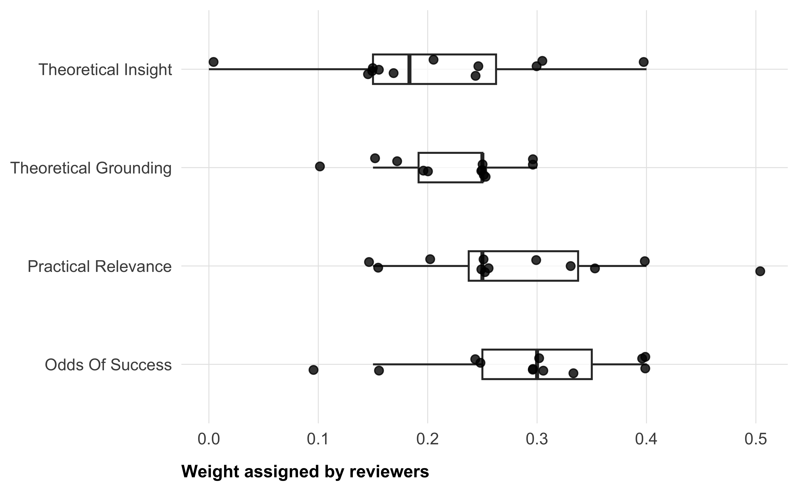
For each reviewer, we computed a weighted average score for each intervention they reviewed. based on their own specific weights. Let \(w_{r,c}\) be the weight reviewer \(r\) gives to criterion \(c\), and \(x_{r,i,c}\) be their rating for intervention i on that criterion. Then the review score is:
\[\text{score}_{r,i} = \frac{\sum_{c \in \text{rating\_vars}} w_{r,c} \cdot x_{r,i,c}}{\sum_{c \in \text{rating\_vars}} w_{r,c}} \]
Since the weights all add up to 1, this simplifies to:
\[\text{score}_{r,i} = \sum_{c \in \text{rating\_vars}} w_{r,c} \cdot x_{r,i,c}.\]
We then standardized the reviewers’ scores. Reviewers tend to use the rating scales differently: some use the whole scale, some use a narrow band; some generally assign higher scores, some generally lower scores. We therefore standardize the reviewer’s scores by z-scoring them. Let: \(\text{score}_{r,i}\) be the weighted score reviewer \(r\) assigned to intervention \(i\), \(\mu_r\) be the mean of reviewer \(r\)’s scores across all interventions they rated, \(\sigma_r\) be the standard deviation of reviewer \(r\)’s scores. Then the standardized score is:
\[\text{zscore}_{r,i} = \frac{\text{score}_{r,i} - \mu_r}{\sigma_r}.\]
This normalization placed all reviews on a common scale in units of (reviewer specific) standard deviation (with mean \(0\) and standard deviation \(1\)).
Plenary meeting and final selection
We used the standardized aggregate scores from the independent reviews as the baseline for our final selection: by default, the top 20 ranking interventions were selected for testing. However, we held a plenary meeting with the entire research team and advisory board to discuss qualitative reviewer comments and make a final selection. During this meeting we agreed to remove interventions that were not not ready to implement and interventions that used fictional characters. To avoid redundancy, we further agreed on merging similar interventions that offered complementary elements. In this case, all teams involved in the merge were contacted to submit a revised intervention together, and all were offered co-authorship. When similar interventions did not show potential to complement each other, we selected the one with the highest rank and removed the others. We also removed two interventions on which major concerns regarding their effectiveness were raised during the discussion, and in qualitative reviewer comments. As a rule, interventions that were removed were replaced by the next-highest ranked intervention. There was only one exception to this rule: an LLM-based discussion intervention. We decided to include this intervention because we had very few dynamic interventions in our selection, and we agreed that the intervention was one of the most promising LLM-based interventions.
Power simulation
For our simulations, we only generate data with a single outcome variable, namely our main outcome trust in climate scientists. To make our simulations more realistic, we used pilot data collected by authors from one of the interventions. We used the control condition from this pilot data (N = 76).
In our simulations, we estimated statistical power for different combinations of sample- and effect size parameters. We refer to sample size as the number of participants per experimental condition, with equal sample size assumed for all 20 treatment conditions, and twice as many for the control condition. For example, if sample size n = 500, this means 20x500 + 2x500 = 11,000 participants in total. For each of sample size x effect size combinations, we ran 1,000 simulations. Each simulation generated a data set, which reflected the planned megastudy design with 20 interventions and a shared control group. For more realistic distributions of our outcome variable trust in climate scientists, scores were generated by re-sampling with replacement from the empirical distribution observed in pilot data. No additional error term was added, as the empirical distribution is assumed to adequately represent the outcome variance in the main study. Treatment effects were simulated by adding a standardized effect size (Cohen’s d) to the intervention conditions, but not to the control condition. For simplicity, all interventions were assumed to have the same effect (i.e., a single common effect size across all 20 interventions).
We translated the standardized effect sizes into point differences on the original 0 to 100 trust scale, by multiplying the standardized effect with the standard deviation of the simulated sample. Because standard deviations could vary slightly between simulations, the translated effect sizes could, too7. Outcomes were constrained to the original 0–100 scale. This way, our simulation realistically mimicked potential floor/ceiling effects.
Each simulated dataset was analyzed using a linear regression model predicting the outcome from each experimental condition relative to the control group, yielding 20 different treatment effect estimates.
Statistical significance was evaluated at \(\alpha\) = .05. Analogous to our analytical procedure, we adjusted p-values for multiple testing via the Benjamini–Hochberg false discovery rate (FDR) procedure. However, for comparison, we also report uncorrected p-values for the power simulations.
Our definition of statistical power differs slightly from the standard definition of power, which is the proportion of simulations in which a single effect reaches significance (for a given combination of sample- and effect size). For this megastudy, we defined statistical power as the expected proportion of true intervention effects detected as statistically significant — i.e. the average number of significant intervention effects per simulated dataset, divided by the total number of interventions (N = 20). This reflects the study’s ability to identify effective interventions rather than the probability of detecting any single effect.
Simulated sample characteristics
We will provide a descriptive overview of sample characteristics and missing values, similar to Table 4.
| Characteristic | N = 22,0001 |
|---|---|
| age | 46.28 (16.89) |
| gender | |
| Male | 7,347 (33%) |
| Female | 7,261 (33%) |
| Other | 7,392 (34%) |
| race | |
| White / Caucasian | 4,369 (20%) |
| Black / African American | 4,450 (20%) |
| Hispanic / Latino | 4,378 (20%) |
| Asian / Asian American | 4,424 (20%) |
| Other | 4,379 (20%) |
| education | |
| Less than high school | 3,655 (17%) |
| High school diploma / GED | 3,522 (16%) |
| Some college or Associate's degree | 3,672 (17%) |
| Bachelor's degree | 3,775 (17%) |
| Master's degree / Professional degree | 3,663 (17%) |
| Doctorate degree / Ph.D. | 3,713 (17%) |
| income | |
| Less than $30,000 | 4,388 (20%) |
| $30,000 to $55,999 | 4,302 (20%) |
| $56,000 to $99,999 | 4,457 (20%) |
| $100,000 to $167,999 | 4,425 (20%) |
| $168,000 or more | 4,428 (20%) |
| household_size | |
| 1 | 3,696 (17%) |
| 2 | 3,704 (17%) |
| 3 | 3,660 (17%) |
| 4 | 3,601 (16%) |
| 5 | 3,693 (17%) |
| 6 or more | 3,646 (17%) |
| social_class | |
| Lower class | 5,606 (25%) |
| Working class | 5,494 (25%) |
| Middle class | 5,454 (25%) |
| Upper class | 5,446 (25%) |
| urban_rural | |
| A large city | 5,516 (25%) |
| A suburb near a large city | 5,470 (25%) |
| A small city or town | 5,446 (25%) |
| A rural area | 5,568 (25%) |
| trust_multidimensional | 50.05 (7.83) |
| Missing | 2,382 (11%) |
| trust_post | 50.34 (27.39) |
| Missing | 2,392 (11%) |
| distrust_post | 50.06 (27.56) |
| Missing | 2,422 (11%) |
| funding_perceptions | 50.54 (27.57) |
| Missing | 2,631 (12%) |
| policy_role_mean | 49.92 (13.75) |
| Missing | 2,574 (12%) |
| inst_trust_mean | 49.99 (12.23) |
| Missing | 2,582 (12%) |
| donation_ams | 5.04 (2.88) |
| Missing | 2,803 (13%) |
| belief_post | 49.96 (27.65) |
| Missing | 2,599 (12%) |
| concern_mean | 50.15 (15.81) |
| Missing | 2,581 (12%) |
| policy_general | 50.20 (27.49) |
| Missing | 2,571 (12%) |
| policy_specific_mean | 50.10 (10.49) |
| Missing | 2,757 (13%) |
| behavior_mean | 50.05 (11.70) |
| Missing | 2,787 (13%) |
| 1 Mean (SD); n (%) | |
Statistical Analyses
Primary outcome
Table 5 provides details on the model estimates for the treatment effects on our primary outcome, trust in cliamte scientists.
| Trust in climate scientists (multidimensional) | ||||||
| Estimate1 | SE | 95% CI low | 95% CI high | p | p (adj.) | |
|---|---|---|---|---|---|---|
| intervention_15 | 0.573 | 0.316 | −0.045 | 1.192 | 0.069 | 0.769 |
| intervention_17 | 0.567 | 0.320 | −0.061 | 1.195 | 0.077 | 0.769 |
| intervention_5 | 0.392 | 0.317 | −0.229 | 1.014 | 0.216 | 0.935 |
| intervention_10 | 0.319 | 0.319 | −0.306 | 0.944 | 0.317 | 0.935 |
| intervention_2 | 0.316 | 0.325 | −0.322 | 0.953 | 0.332 | 0.935 |
| intervention_9 | 0.273 | 0.323 | −0.360 | 0.907 | 0.397 | 0.935 |
| intervention_12 | 0.251 | 0.328 | −0.393 | 0.895 | 0.444 | 0.935 |
| intervention_1 | 0.115 | 0.326 | −0.523 | 0.754 | 0.723 | 0.935 |
| intervention_3 | 0.109 | 0.327 | −0.531 | 0.750 | 0.739 | 0.935 |
| intervention_4 | 0.030 | 0.319 | −0.596 | 0.655 | 0.926 | 0.975 |
| intervention_7 | -0.006 | 0.324 | −0.641 | 0.630 | 0.986 | 0.986 |
| intervention_20 | -0.063 | 0.316 | −0.683 | 0.556 | 0.842 | 0.935 |
| intervention_19 | -0.064 | 0.318 | −0.687 | 0.560 | 0.841 | 0.935 |
| intervention_8 | -0.068 | 0.327 | −0.708 | 0.572 | 0.835 | 0.935 |
| intervention_16 | -0.086 | 0.330 | −0.732 | 0.561 | 0.795 | 0.935 |
| intervention_11 | -0.141 | 0.321 | −0.769 | 0.487 | 0.660 | 0.935 |
| intervention_13 | -0.162 | 0.327 | −0.803 | 0.480 | 0.621 | 0.935 |
| intervention_14 | -0.164 | 0.317 | −0.785 | 0.456 | 0.604 | 0.935 |
| intervention_6 | -0.330 | 0.320 | −0.957 | 0.297 | 0.302 | 0.935 |
| intervention_18 | -0.358 | 0.330 | −1.004 | 0.289 | 0.278 | 0.935 |
| 1 * p_adj < .05; ** p_adj < .01; *** p_adj < .001 (BH-adjusted). HC2 robust standard errors. | ||||||
IPW comparison
Figure 9 shows estimated treatment effects using inverse probability weighting (IPW) vs. unweighted models.
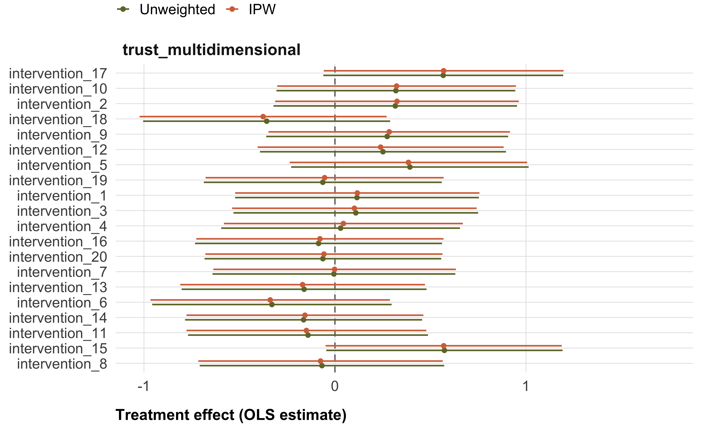
Moderators
In this section, we will report estimates of all moderator effects on the primary outcome variable, multidimensional trust in climate scientists. For demonstration, this pre-registration only includes sample tables for one categorical moderator variable, gender, and one continuous moderator variable, age.
Gender
Table 6 shows the moderator effect of gender on the primary outcome variable, multidimensional trust in climate scientists.
| Moderation of treatment effects by gender | |
| Estimate* (unadjusted p-value, BH-adjusted p-value) | |
| Trust (multidimensional) | |
|---|---|
| intervention_1 | |
| Female | -0.39 (p = 0.624, p_adj = 0.892) |
| Other | -0.45 (p = 0.580, p_adj = 0.892) |
| intervention_10 | |
| Female | 0.28 (p = 0.724, p_adj = 0.921) |
| Other | 0.12 (p = 0.878, p_adj = 0.945) |
| intervention_11 | |
| Female | -1.16 (p = 0.142, p_adj = 0.649) |
| Other | -0.92 (p = 0.243, p_adj = 0.649) |
| intervention_12 | |
| Female | -0.97 (p = 0.239, p_adj = 0.649) |
| Other | -0.45 (p = 0.585, p_adj = 0.892) |
| intervention_13 | |
| Female | -0.09 (p = 0.911, p_adj = 0.945) |
| Other | -0.08 (p = 0.925, p_adj = 0.945) |
| intervention_14 | |
| Female | -1.15 (p = 0.141, p_adj = 0.649) |
| Other | -1.88 (p = 0.015, p_adj = 0.586) |
| intervention_15 | |
| Female | 0.23 (p = 0.763, p_adj = 0.921) |
| Other | 0.77 (p = 0.326, p_adj = 0.814) |
| intervention_16 | |
| Female | -1.32 (p = 0.108, p_adj = 0.649) |
| Other | -0.17 (p = 0.826, p_adj = 0.944) |
| intervention_17 | |
| Female | -1.16 (p = 0.136, p_adj = 0.649) |
| Other | -1.40 (p = 0.076, p_adj = 0.649) |
| intervention_18 | |
| Female | -1.04 (p = 0.206, p_adj = 0.649) |
| Other | -0.51 (p = 0.530, p_adj = 0.892) |
| intervention_19 | |
| Female | -0.06 (p = 0.941, p_adj = 0.945) |
| Other | -0.93 (p = 0.236, p_adj = 0.649) |
| intervention_2 | |
| Female | 0.49 (p = 0.544, p_adj = 0.892) |
| Other | 0.05 (p = 0.945, p_adj = 0.945) |
| intervention_20 | |
| Female | -0.26 (p = 0.742, p_adj = 0.921) |
| Other | -0.61 (p = 0.433, p_adj = 0.866) |
| intervention_3 | |
| Female | -0.46 (p = 0.563, p_adj = 0.892) |
| Other | -0.67 (p = 0.417, p_adj = 0.866) |
| intervention_4 | |
| Female | -1.68 (p = 0.029, p_adj = 0.586) |
| Other | -0.96 (p = 0.226, p_adj = 0.649) |
| intervention_5 | |
| Female | 0.61 (p = 0.429, p_adj = 0.866) |
| Other | 0.39 (p = 0.614, p_adj = 0.892) |
| intervention_6 | |
| Female | -0.47 (p = 0.564, p_adj = 0.892) |
| Other | -1.03 (p = 0.190, p_adj = 0.649) |
| intervention_7 | |
| Female | -1.05 (p = 0.194, p_adj = 0.649) |
| Other | -0.35 (p = 0.655, p_adj = 0.903) |
| intervention_8 | |
| Female | 0.33 (p = 0.682, p_adj = 0.910) |
| Other | 0.65 (p = 0.427, p_adj = 0.866) |
| intervention_9 | |
| Female | -0.22 (p = 0.783, p_adj = 0.921) |
| Other | -1.01 (p = 0.208, p_adj = 0.649) |
| * p_adj < .05; ** p_adj < .01; *** p_adj < .001 (BH-adjusted). Stars based on adjusted p-values. | |
Age
Table 7 shows the moderator effect of gender on the primary outcome variable, multidimensional trust in climate scientists.
| Moderation of treatment effects by age | |
| Estimate* (unadjusted p-value, BH-adjusted p-value) | |
| Trust (multidimensional) | |
|---|---|
| intervention_1 | |
| age | 0.01 (p = 0.561, p_adj = 0.994) |
| intervention_10 | |
| age | 0.02 (p = 0.248, p_adj = 0.994) |
| intervention_11 | |
| age | -0.01 (p = 0.468, p_adj = 0.994) |
| intervention_12 | |
| age | -0.01 (p = 0.706, p_adj = 0.994) |
| intervention_13 | |
| age | 0.01 (p = 0.444, p_adj = 0.994) |
| intervention_14 | |
| age | 0.00 (p = 0.817, p_adj = 0.994) |
| intervention_15 | |
| age | -0.01 (p = 0.791, p_adj = 0.994) |
| intervention_16 | |
| age | -0.02 (p = 0.246, p_adj = 0.994) |
| intervention_17 | |
| age | -0.01 (p = 0.617, p_adj = 0.994) |
| intervention_18 | |
| age | 0.02 (p = 0.319, p_adj = 0.994) |
| intervention_19 | |
| age | 0.01 (p = 0.670, p_adj = 0.994) |
| intervention_2 | |
| age | 0.01 (p = 0.628, p_adj = 0.994) |
| intervention_20 | |
| age | 0.00 (p = 0.894, p_adj = 0.994) |
| intervention_3 | |
| age | -0.00 (p = 0.895, p_adj = 0.994) |
| intervention_4 | |
| age | 0.00 (p = 0.975, p_adj = 0.997) |
| intervention_5 | |
| age | -0.04 (p = 0.040, p_adj = 0.791) |
| intervention_6 | |
| age | -0.03 (p = 0.165, p_adj = 0.994) |
| intervention_7 | |
| age | -0.02 (p = 0.353, p_adj = 0.994) |
| intervention_8 | |
| age | 0.02 (p = 0.298, p_adj = 0.994) |
| intervention_9 | |
| age | -0.00 (p = 0.997, p_adj = 0.997) |
| * p_adj < .05; ** p_adj < .01; *** p_adj < .001 (BH-adjusted). Stars based on adjusted p-values. | |
Secondary outcomes
Treatment effects
Table 8 provides details on model estimates for secondary outcomes.
| Treatment effects | ||||||
| Estimate* (unadjusted p-value, BH-adjusted p-value) | ||||||
| Trust (post) | Distrust (post) | Funding perceptions | Policy role | Inst. trust | Newsletter signup1 | |
|---|---|---|---|---|---|---|
| intervention_1 | 2.65 (p = 0.020, p_adj = 0.409) | 0.45 (p = 0.678, p_adj = 0.904) | -0.44 (p = 0.693, p_adj = 0.988) | 0.29 (p = 0.618, p_adj = 0.955) | -0.48 (p = 0.333, p_adj = 0.737) | 0.11 / 1.8% (p = 0.285, p_adj = 0.738) |
| intervention_10 | 0.11 (p = 0.923, p_adj = 0.950) | 1.14 (p = 0.312, p_adj = 0.904) | 1.67 (p = 0.138, p_adj = 0.551) | 0.54 (p = 0.333, p_adj = 0.955) | 1.09 (p = 0.031, p_adj = 0.537) | 0.07 / 1.1% (p = 0.523, p_adj = 0.849) |
| intervention_11 | 1.08 (p = 0.334, p_adj = 0.819) | 1.25 (p = 0.268, p_adj = 0.904) | -0.34 (p = 0.764, p_adj = 0.988) | -0.07 (p = 0.907, p_adj = 0.955) | 0.26 (p = 0.614, p_adj = 0.816) | 0.05 / 0.8% (p = 0.609, p_adj = 0.849) |
| intervention_12 | -1.65 (p = 0.140, p_adj = 0.819) | 0.76 (p = 0.497, p_adj = 0.904) | 0.41 (p = 0.723, p_adj = 0.988) | 0.10 (p = 0.856, p_adj = 0.955) | 0.47 (p = 0.368, p_adj = 0.737) | -0.00 / -0.0% (p = 0.978, p_adj = 0.981) |
| intervention_13 | -0.69 (p = 0.532, p_adj = 0.819) | 0.56 (p = 0.614, p_adj = 0.904) | 1.02 (p = 0.371, p_adj = 0.947) | 0.32 (p = 0.561, p_adj = 0.955) | 0.42 (p = 0.406, p_adj = 0.738) | 0.06 / 0.9% (p = 0.598, p_adj = 0.849) |
| intervention_14 | 0.14 (p = 0.903, p_adj = 0.950) | 0.26 (p = 0.817, p_adj = 0.955) | 0.71 (p = 0.535, p_adj = 0.988) | -0.33 (p = 0.558, p_adj = 0.955) | -0.06 (p = 0.908, p_adj = 0.991) | -0.12 / -1.8% (p = 0.279, p_adj = 0.738) |
| intervention_15 | 0.80 (p = 0.469, p_adj = 0.819) | 3.31* (p = 0.003, p_adj = 0.034) | -0.93 (p = 0.412, p_adj = 0.947) | -0.20 (p = 0.719, p_adj = 0.955) | 0.63 (p = 0.205, p_adj = 0.585) | 0.09 / 1.5% (p = 0.369, p_adj = 0.738) |
| intervention_16 | -0.07 (p = 0.950, p_adj = 0.950) | 0.96 (p = 0.407, p_adj = 0.904) | -0.05 (p = 0.965, p_adj = 0.988) | 0.07 (p = 0.904, p_adj = 0.955) | -0.36 (p = 0.480, p_adj = 0.800) | 0.12 / 1.8% (p = 0.268, p_adj = 0.738) |
| intervention_17 | 1.09 (p = 0.330, p_adj = 0.819) | -0.13 (p = 0.907, p_adj = 0.955) | 0.39 (p = 0.727, p_adj = 0.988) | 0.53 (p = 0.344, p_adj = 0.955) | 0.72 (p = 0.161, p_adj = 0.537) | 0.11 / 1.8% (p = 0.285, p_adj = 0.738) |
| intervention_18 | 0.20 (p = 0.861, p_adj = 0.950) | 1.06 (p = 0.355, p_adj = 0.904) | 3.87* (p = 0.001, p_adj = 0.013) | -0.83 (p = 0.143, p_adj = 0.955) | 0.02 (p = 0.975, p_adj = 0.991) | 0.11 / 1.7% (p = 0.301, p_adj = 0.738) |
| intervention_19 | 1.01 (p = 0.365, p_adj = 0.819) | 1.27 (p = 0.260, p_adj = 0.904) | -0.11 (p = 0.927, p_adj = 0.988) | -0.73 (p = 0.198, p_adj = 0.955) | 0.84 (p = 0.095, p_adj = 0.537) | 0.22 / 3.6% (p = 0.032, p_adj = 0.636) |
| intervention_2 | -0.97 (p = 0.377, p_adj = 0.819) | 3.68* (p = 0.001, p_adj = 0.020) | 1.43 (p = 0.209, p_adj = 0.696) | -0.27 (p = 0.629, p_adj = 0.955) | 0.23 (p = 0.653, p_adj = 0.816) | 0.05 / 0.8% (p = 0.637, p_adj = 0.849) |
| intervention_20 | 0.77 (p = 0.487, p_adj = 0.819) | 0.47 (p = 0.676, p_adj = 0.904) | -1.79 (p = 0.109, p_adj = 0.547) | -0.10 (p = 0.854, p_adj = 0.955) | 0.79 (p = 0.124, p_adj = 0.537) | -0.00 / -0.0% (p = 0.981, p_adj = 0.981) |
| intervention_3 | 0.99 (p = 0.380, p_adj = 0.819) | 1.74 (p = 0.120, p_adj = 0.797) | 0.38 (p = 0.735, p_adj = 0.988) | 0.35 (p = 0.540, p_adj = 0.955) | 0.55 (p = 0.267, p_adj = 0.666) | 0.14 / 2.2% (p = 0.194, p_adj = 0.738) |
| intervention_4 | -1.16 (p = 0.300, p_adj = 0.819) | -0.74 (p = 0.515, p_adj = 0.904) | 1.87 (p = 0.101, p_adj = 0.547) | 0.29 (p = 0.608, p_adj = 0.955) | -0.33 (p = 0.520, p_adj = 0.800) | 0.05 / 0.8% (p = 0.617, p_adj = 0.849) |
| intervention_5 | 0.74 (p = 0.502, p_adj = 0.819) | 0.71 (p = 0.524, p_adj = 0.904) | 1.87 (p = 0.102, p_adj = 0.547) | -0.19 (p = 0.736, p_adj = 0.955) | -0.23 (p = 0.643, p_adj = 0.816) | 0.03 / 0.5% (p = 0.765, p_adj = 0.956) |
| intervention_6 | 0.48 (p = 0.670, p_adj = 0.916) | -0.01 (p = 0.994, p_adj = 0.994) | 0.29 (p = 0.800, p_adj = 0.988) | 0.03 (p = 0.960, p_adj = 0.960) | 0.70 (p = 0.161, p_adj = 0.537) | 0.11 / 1.7% (p = 0.304, p_adj = 0.738) |
| intervention_7 | -0.41 (p = 0.709, p_adj = 0.916) | 0.25 (p = 0.820, p_adj = 0.955) | -0.02 (p = 0.988, p_adj = 0.988) | -0.34 (p = 0.551, p_adj = 0.955) | 0.06 (p = 0.910, p_adj = 0.991) | 0.01 / 0.1% (p = 0.928, p_adj = 0.981) |
| intervention_8 | 1.19 (p = 0.293, p_adj = 0.819) | -0.14 (p = 0.898, p_adj = 0.955) | -0.91 (p = 0.426, p_adj = 0.947) | -0.25 (p = 0.659, p_adj = 0.955) | 0.01 (p = 0.991, p_adj = 0.991) | -0.01 / -0.2% (p = 0.924, p_adj = 0.981) |
| intervention_9 | -0.38 (p = 0.732, p_adj = 0.916) | 0.65 (p = 0.561, p_adj = 0.904) | 0.17 (p = 0.877, p_adj = 0.988) | -0.67 (p = 0.241, p_adj = 0.955) | 0.84 (p = 0.105, p_adj = 0.537) | 0.10 / 1.6% (p = 0.345, p_adj = 0.738) |
| * p_adj < .05; ** p_adj < .01; *** p_adj < .001 (BH-adjusted). HC2 robust standard errors. | ||||||
| 1 For binary outcomes, estimates are log-odds / average marginal effect in percentage points (pp). P-values are based on log-odds. | ||||||
Moderators
In this pre-registration, we will only report the moderator effects of gender and age to provide examples.
Gender
Figure 10 and Table 9 show the moderator effect of gender on the secondary outcomes.

| Moderation of treatment effects by gender | ||
| Estimate* (unadjusted p-value, BH-adjusted p-value) | ||
| Funding perceptions | Newsletter signup1 | |
|---|---|---|
| intervention_1 | ||
| Female | -2.81 (p = 0.296, p_adj = 0.753) | 0.05 (p = 0.849, p_adj = 0.917) |
| Other | -0.03 (p = 0.993, p_adj = 0.993) | -0.15 (p = 0.559, p_adj = 0.799) |
| intervention_10 | ||
| Female | -2.34 (p = 0.399, p_adj = 0.761) | -0.42 (p = 0.116, p_adj = 0.502) |
| Other | -1.96 (p = 0.482, p_adj = 0.807) | -0.48 (p = 0.060, p_adj = 0.404) |
| intervention_11 | ||
| Female | 1.29 (p = 0.647, p_adj = 0.881) | -0.19 (p = 0.465, p_adj = 0.760) |
| Other | -1.01 (p = 0.718, p_adj = 0.884) | -0.47 (p = 0.070, p_adj = 0.404) |
| intervention_12 | ||
| Female | -3.79 (p = 0.186, p_adj = 0.677) | 0.04 (p = 0.892, p_adj = 0.939) |
| Other | 2.06 (p = 0.466, p_adj = 0.807) | -0.60 (p = 0.024, p_adj = 0.237) |
| intervention_13 | ||
| Female | 1.40 (p = 0.610, p_adj = 0.872) | -0.26 (p = 0.324, p_adj = 0.681) |
| Other | -1.47 (p = 0.599, p_adj = 0.872) | -0.35 (p = 0.173, p_adj = 0.502) |
| intervention_14 | ||
| Female | -3.44 (p = 0.229, p_adj = 0.703) | 0.09 (p = 0.754, p_adj = 0.900) |
| Other | -2.35 (p = 0.399, p_adj = 0.761) | -0.13 (p = 0.627, p_adj = 0.845) |
| intervention_15 | ||
| Female | -4.05 (p = 0.146, p_adj = 0.677) | -0.17 (p = 0.513, p_adj = 0.760) |
| Other | -3.42 (p = 0.207, p_adj = 0.689) | -0.47 (p = 0.071, p_adj = 0.404) |
| intervention_16 | ||
| Female | -3.87 (p = 0.163, p_adj = 0.677) | 0.32 (p = 0.217, p_adj = 0.544) |
| Other | -5.32 (p = 0.052, p_adj = 0.522) | -0.17 (p = 0.505, p_adj = 0.760) |
| intervention_17 | ||
| Female | -1.07 (p = 0.695, p_adj = 0.884) | 0.08 (p = 0.747, p_adj = 0.900) |
| Other | 0.27 (p = 0.921, p_adj = 0.978) | -0.09 (p = 0.723, p_adj = 0.900) |
| intervention_18 | ||
| Female | -3.80 (p = 0.178, p_adj = 0.677) | 0.08 (p = 0.765, p_adj = 0.900) |
| Other | 0.25 (p = 0.929, p_adj = 0.978) | -0.38 (p = 0.145, p_adj = 0.502) |
| intervention_19 | ||
| Female | -2.82 (p = 0.322, p_adj = 0.753) | 0.23 (p = 0.373, p_adj = 0.711) |
| Other | -5.57 (p = 0.050, p_adj = 0.522) | -0.27 (p = 0.281, p_adj = 0.662) |
| intervention_2 | ||
| Female | -0.97 (p = 0.729, p_adj = 0.884) | -0.25 (p = 0.344, p_adj = 0.687) |
| Other | -2.97 (p = 0.278, p_adj = 0.753) | -0.39 (p = 0.125, p_adj = 0.502) |
| intervention_20 | ||
| Female | -1.19 (p = 0.660, p_adj = 0.881) | 0.06 (p = 0.833, p_adj = 0.917) |
| Other | 0.46 (p = 0.866, p_adj = 0.974) | -0.01 (p = 0.979, p_adj = 0.999) |
| intervention_3 | ||
| Female | -6.45 (p = 0.019, p_adj = 0.410) | 0.19 (p = 0.477, p_adj = 0.760) |
| Other | -6.48 (p = 0.020, p_adj = 0.410) | -0.07 (p = 0.796, p_adj = 0.910) |
| intervention_4 | ||
| Female | -2.57 (p = 0.357, p_adj = 0.753) | -0.82 (p = 0.004, p_adj = 0.071) |
| Other | -4.36 (p = 0.116, p_adj = 0.663) | -0.26 (p = 0.304, p_adj = 0.676) |
| intervention_5 | ||
| Female | -4.79 (p = 0.088, p_adj = 0.586) | 0.66 (p = 0.018, p_adj = 0.237) |
| Other | -4.77 (p = 0.086, p_adj = 0.586) | 0.40 (p = 0.149, p_adj = 0.502) |
| intervention_6 | ||
| Female | -1.60 (p = 0.577, p_adj = 0.872) | -0.33 (p = 0.200, p_adj = 0.534) |
| Other | -0.14 (p = 0.960, p_adj = 0.985) | -0.85* (p = 0.001, p_adj = 0.041) |
| intervention_7 | ||
| Female | -1.98 (p = 0.484, p_adj = 0.807) | 0.19 (p = 0.489, p_adj = 0.760) |
| Other | -2.51 (p = 0.358, p_adj = 0.753) | -0.00 (p = 0.999, p_adj = 0.999) |
| intervention_8 | ||
| Female | 0.65 (p = 0.814, p_adj = 0.957) | 0.37 (p = 0.163, p_adj = 0.502) |
| Other | 0.44 (p = 0.877, p_adj = 0.974) | 0.13 (p = 0.634, p_adj = 0.845) |
| intervention_9 | ||
| Female | -2.83 (p = 0.305, p_adj = 0.753) | -0.19 (p = 0.484, p_adj = 0.760) |
| Other | -1.64 (p = 0.565, p_adj = 0.872) | -0.35 (p = 0.176, p_adj = 0.502) |
| * p_adj < .05; ** p_adj < .01; *** p_adj < .001 (BH-adjusted). Stars based on adjusted p-values. | ||
| 1 Estimates are odds ratios from logistic regression. | ||
Age
Figure 11 and Table 10 show the moderator effect of age on the secondary outcomes.

| Moderation of treatment effects by age | |
| Estimate* (unadjusted p-value, BH-adjusted p-value) | |
| Funding perceptions | |
|---|---|
| intervention_1 | |
| age | 0.00 (p = 0.964, p_adj = 0.964) |
| intervention_10 | |
| age | 0.06 (p = 0.382, p_adj = 0.964) |
| intervention_11 | |
| age | 0.16 (p = 0.020, p_adj = 0.401) |
| intervention_12 | |
| age | 0.07 (p = 0.328, p_adj = 0.964) |
| intervention_13 | |
| age | 0.01 (p = 0.878, p_adj = 0.964) |
| intervention_14 | |
| age | 0.03 (p = 0.693, p_adj = 0.964) |
| intervention_15 | |
| age | -0.05 (p = 0.512, p_adj = 0.964) |
| intervention_16 | |
| age | 0.02 (p = 0.737, p_adj = 0.964) |
| intervention_17 | |
| age | 0.05 (p = 0.429, p_adj = 0.964) |
| intervention_18 | |
| age | 0.02 (p = 0.763, p_adj = 0.964) |
| intervention_19 | |
| age | 0.02 (p = 0.791, p_adj = 0.964) |
| intervention_2 | |
| age | -0.02 (p = 0.823, p_adj = 0.964) |
| intervention_20 | |
| age | 0.01 (p = 0.931, p_adj = 0.964) |
| intervention_3 | |
| age | -0.05 (p = 0.504, p_adj = 0.964) |
| intervention_4 | |
| age | 0.10 (p = 0.151, p_adj = 0.964) |
| intervention_5 | |
| age | 0.04 (p = 0.552, p_adj = 0.964) |
| intervention_6 | |
| age | 0.01 (p = 0.836, p_adj = 0.964) |
| intervention_7 | |
| age | 0.08 (p = 0.272, p_adj = 0.964) |
| intervention_8 | |
| age | 0.07 (p = 0.319, p_adj = 0.964) |
| intervention_9 | |
| age | 0.06 (p = 0.400, p_adj = 0.964) |
| * p_adj < .05; ** p_adj < .01; *** p_adj < .001 (BH-adjusted). Stars based on adjusted p-values. | |
Persistence
Figure 12 provides a visualization of the treatment effects in the experiment and the follow-up survey, Table 11 provides more details.
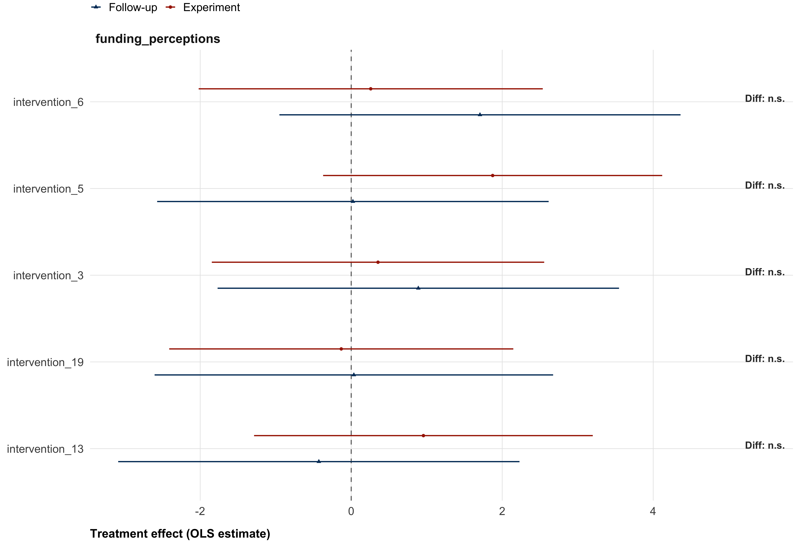
| Persistence of treatment effects — secondary outcomes | ||
| Estimate* (unadjusted p-value, BH-adjusted p-value) | ||
| Funding perceptions | Newsletter signup1 | |
|---|---|---|
| intervention_13 | ||
| Experiment | 0.96 (p = 0.403, p_adj = 0.986) | 0.01 (p = 0.581, p_adj = 0.852) |
| Follow-up | -0.43 (p = 0.752, p_adj = 0.986) | -0.01 (p = 0.645, p_adj = 0.852) |
| Interaction | -1.39 (p = 0.441, p_adj = 0.736) | -0.12 (p = 0.472, p_adj = 0.472) |
| intervention_19 | ||
| Experiment | -0.13 (p = 0.910, p_adj = 0.986) | 0.04 (p = 0.035, p_adj = 0.355) |
| Follow-up | 0.04 (p = 0.979, p_adj = 0.986) | 0.01 (p = 0.767, p_adj = 0.852) |
| Interaction | 0.17 (p = 0.927, p_adj = 0.927) | -0.19 (p = 0.247, p_adj = 0.447) |
| intervention_3 | ||
| Experiment | 0.35 (p = 0.752, p_adj = 0.986) | 0.02 (p = 0.196, p_adj = 0.761) |
| Follow-up | 0.89 (p = 0.512, p_adj = 0.986) | -0.00 (p = 0.936, p_adj = 0.936) |
| Interaction | 0.53 (p = 0.766, p_adj = 0.927) | -0.15 (p = 0.357, p_adj = 0.447) |
| intervention_5 | ||
| Experiment | 1.87 (p = 0.102, p_adj = 0.986) | 0.01 (p = 0.752, p_adj = 0.852) |
| Follow-up | 0.02 (p = 0.986, p_adj = 0.986) | -0.02 (p = 0.304, p_adj = 0.761) |
| Interaction | -1.85 (p = 0.294, p_adj = 0.736) | -0.16 (p = 0.330, p_adj = 0.447) |
| intervention_6 | ||
| Experiment | 0.26 (p = 0.824, p_adj = 0.986) | 0.02 (p = 0.299, p_adj = 0.761) |
| Follow-up | 1.71 (p = 0.208, p_adj = 0.986) | -0.01 (p = 0.749, p_adj = 0.852) |
| Interaction | 1.45 (p = 0.421, p_adj = 0.736) | -0.15 (p = 0.347, p_adj = 0.447) |
| * p_adj < .05; ** p_adj < .01; *** p_adj < .001 (BH-adjusted). 'Interaction' tests whether the treatment effect changed between experiment and follow-up. 'Experiment' and 'Follow-up' show predicted effects within each wave. | ||
| 1 Estimates are average marginal effects on the probability scale. | ||
Tertary outcomes
In the manuscript, we will report additional analyses and regression coefficient tables in the same way as done for the secondary outcomes. For brevity, we have not run these analyses in this preregistration.
Item-level analyses
Several outcome scales comprise multiple items that may respond differently to the interventions. We analyze item-level heterogeneity for five scales: trust dimensions, specific climate policies, individual-level behaviors, institutional trust, and climate change concern. For each scale, we estimate a single interaction model on long-format data, stacking observations across all items. Standard errors are clustered at the participant level. We report two sets of results: predicted treatment effects within each item, and interaction terms testing whether effects differ across items relative to the reference item (first level of each scale).
Formally, for all item-level models:
\[Y_{ij} = \beta_0 + \sum_{k=1}^{K} \beta_k \, D_{ik} + \beta_J \, Item_j + \sum_{k=1}^{K} \beta_{kJ} (D_{ik} \times Item_j) + \varepsilon_{ij}\]
where \(Y_{ij}\) is outcome \(i\) on item \(j\), \(D_{ik}\) are intervention dummies with control as reference, \(Item_j\) are item dummies with one item as reference, \(\beta_k\) is the treatment effect on the reference item, \(\beta_{kJ}\) tests whether the effect differs on item \(j\) relative to the reference, and \(\beta_k + \beta_{kJ}\) is the predicted effect on item \(j\). We adjust for multiple comparison within each scale. For example, for the predicted treatment effects of the different trust dimensions, we apply multiple comparison correction across all 80 comparisons (20 interventions × 4 dimensions) testing whether effects differ from zero within each dimension. This adjustment is conservative, as it treats the dimensions as one family of tests. For the interaction effects testing whether effects differ across dimensions relative to the (omitted) baseline dimensions, in this case competence, we apply multiple comparison correction to all 60 interaction terms (20 interventions × 3 dimensions)8, again treating the all dimensions as one family of tests.
# trust dimensions
trust_dimensions_results <- run_items_model(
data = data,
items = trust_dimensions,
outcome_name = "trust",
covariates = covariates
)
# specific climate policies
policy_items_results <- run_items_model(
data = data,
items = policy_specific_items,
outcome_name = "policy_specific",
covariates = covariates
)
# individual behaviors
behavior_items_results <- run_items_model(
data = data,
items = behavior_items,
outcome_name = "behavior",
covariates = covariates
)
# institutional trust
inst_trust_items_results <- run_items_model(
data = data,
items = inst_trust_items,
outcome_name = "inst_trust",
covariates = covariates
)
# concern: absolute vs relative
data <- data |>
mutate(concern_absolute = rowMeans(pick(concern_1, concern_2), na.rm = TRUE))
concern_items_results <- run_items_model(
data = data,
items = c("concern_absolute", "concern_3"),
outcome_name = "concern",
covariates = covariates
)Trust dimensions
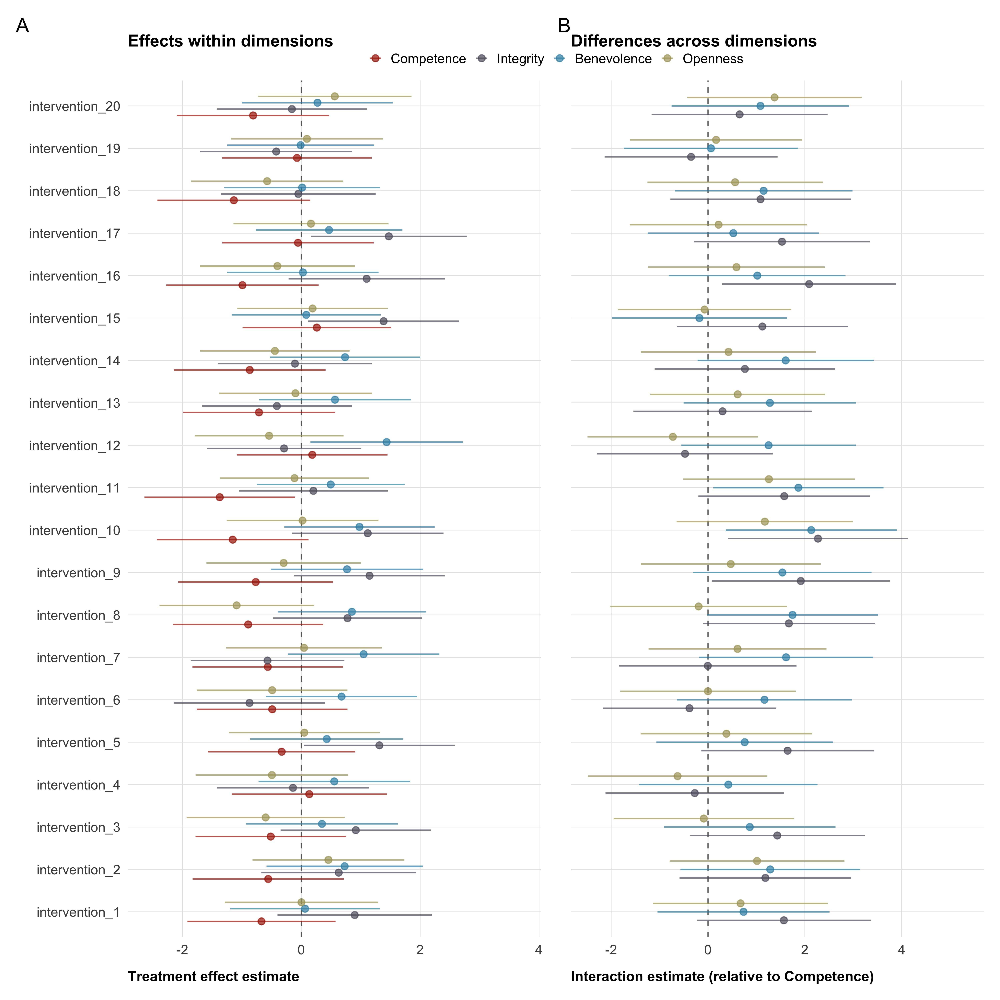
Specific climate policies
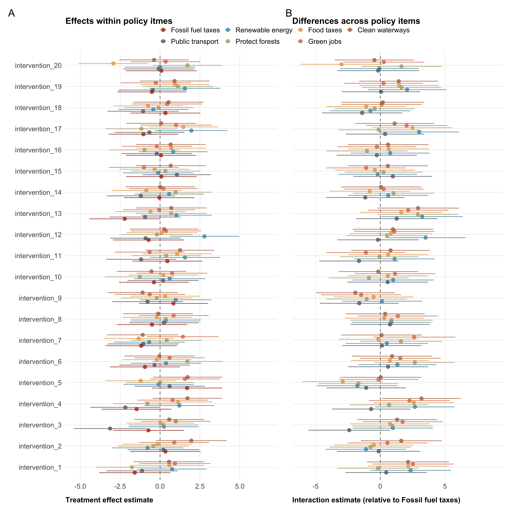
Individual-level behaviors
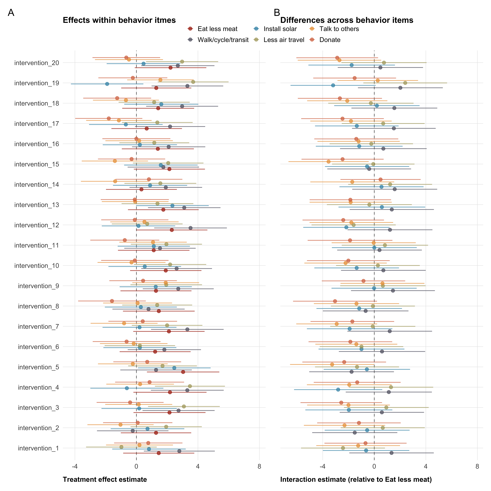
Institutional trust
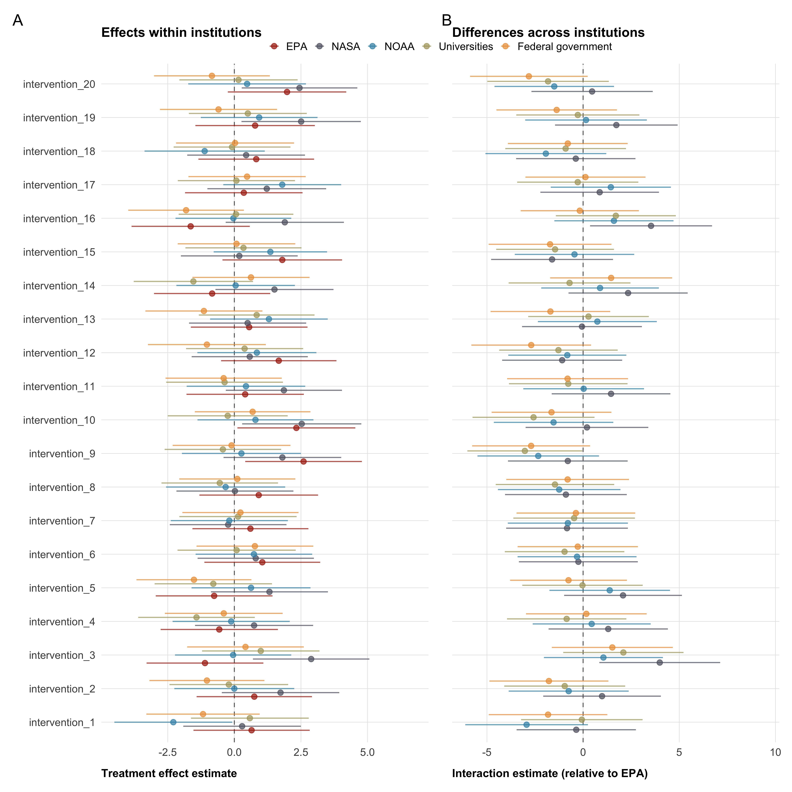
Climate change concern: absolute vs. relative
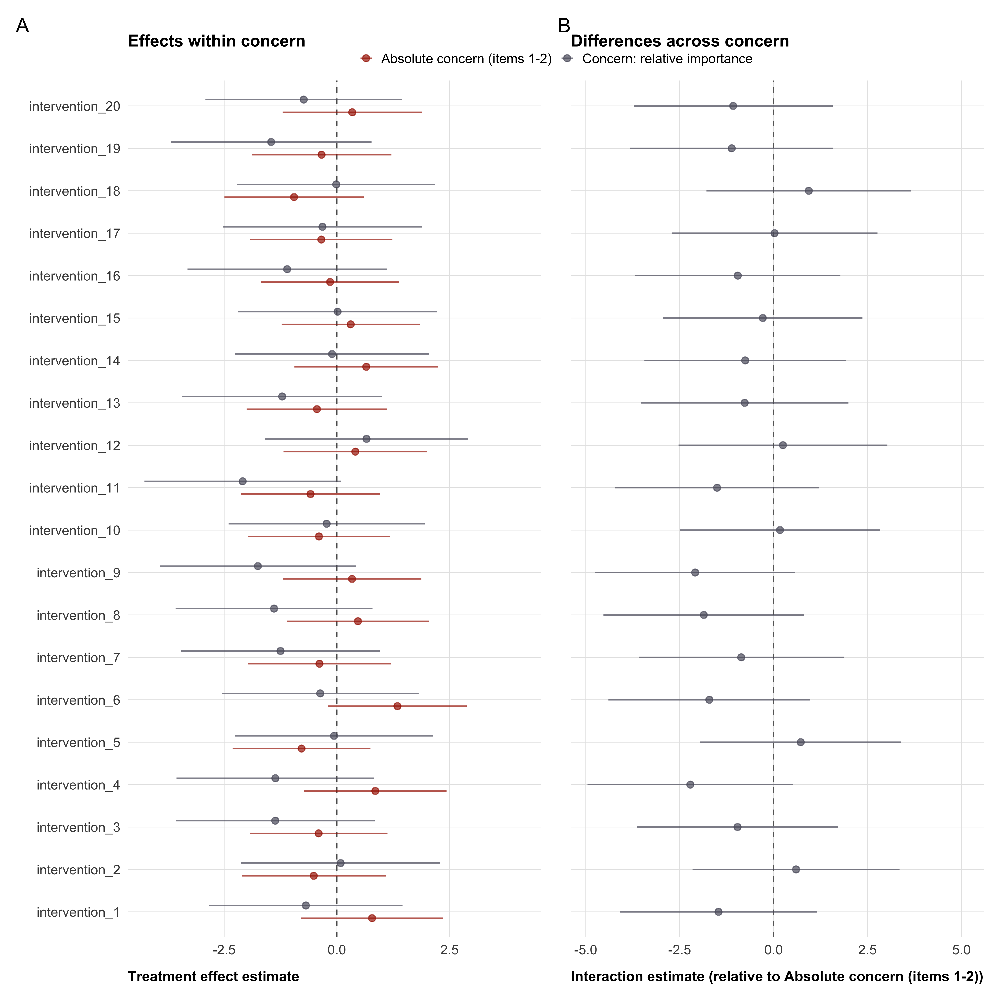
Scale properties
We report scale properties for all multi-item outcome measures to document the internal consistency of our scales (Table 12). All statistics are computed on the control group only (N ≈ 2,000) to avoid contamination from differential treatment effects on individual items.
We report two complementary indicators of internal consistency. Cronbach’s \(\alpha\) is the most widely used reliability measure, reflecting the average inter-item correlation weighted by the number of items. It increases with both the number of items and the average inter-item correlation, which makes it sensitive to scale length. We also report the mean inter-item correlation (mean r), which is independent of scale length.
In addition, we report inter-item correlation matrices for each scale—for trust in Table 13, for institutional trust in Table 14, for concern in Table 15, for policy preferences in Table 16, for behaviors in Table 17. We expect items to be heterogenous for essentially every scale. The correlation matrices will provide insight on whether this expectation was correct. Low inter-item correlations would justify treating items separately rather than as a composite, as is done in the previous section.
| Scale | N items | Cronbach's α | Mean r |
|---|---|---|---|
| Trust: All dimensions | 12 | 0.00 | 0.00 |
| Trust: Competence | 3 | -0.04 | -0.01 |
| Trust: Integrity | 3 | 0.03 | 0.01 |
| Trust: Benevolence | 3 | -0.03 | -0.01 |
| Trust: Openness | 3 | 0.08 | 0.03 |
| Institutional trust | 5 | 0.00 | 0.00 |
| Policy role | 4 | 0.03 | 0.01 |
| Concern | 3 | -0.01 | 0.00 |
| Specific policies | 7 | 0.05 | 0.01 |
| Individual behaviors | 6 | 0.01 | 0.00 |
| Openness 3 | Openness 2 | Openness 1 | Benevolence 3 | Benevolence 2 | Benevolence 1 | Integrity 3 | Integrity 2 | Integrity 1 | Competence 3 | Competence 2 | |
|---|---|---|---|---|---|---|---|---|---|---|---|
| Competence 1 | -0.012 | 0.029 | 0.012 | 0.005 | 0.002 | 0.02 | 0.035 | -0.011 | -0.005 | -0.028 | -0.014 |
| Competence 2 | -0.037 | 0.006 | 0.014 | -0.032 | -0.02 | -0.019 | 0.003 | -0.007 | -0.032 | 0.002 | |
| Competence 3 | -0.007 | -0.024 | 0.004 | -0.003 | 0.006 | -0.011 | 0.025 | 0.006 | 0.022 | ||
| Integrity 1 | 0.011 | -0.05 | -0.025 | 0.029 | 0.003 | 0.029 | 0.006 | 0.026 | |||
| Integrity 2 | 0.043 | -0.001 | 0.005 | -0.007 | -0.009 | 0.035 | 0.002 | ||||
| Integrity 3 | -0.011 | -0.009 | -0.024 | -0.024 | -0.012 | -0.024 | |||||
| Benevolence 1 | 0.009 | 0.025 | -0.006 | -0.028 | -0.014 | ||||||
| Benevolence 2 | 0.001 | 0.008 | -0.037 | 0.017 | |||||||
| Benevolence 3 | -0.014 | 0.036 | 0.012 | ||||||||
| Openness 1 | 0.037 | 0.023 | |||||||||
| Openness 2 | 0.026 |
| Federal government | Universities | NOAA | NASA | |
|---|---|---|---|---|
| EPA | -0.043 | -0.014 | 0.008 | -0.021 |
| NASA | -0.002 | 0.011 | -0.019 | |
| NOAA | 0.017 | 0.01 | ||
| Universities | 0.048 |
| Concern: relative importance | Concern: how serious? | |
|---|---|---|
| Concern: how concerned? | -0.025 | 0.011 |
| Concern: how serious? | 0.006 |
| Clean waterways | Green jobs | Food taxes | Protect forests | Renewable energy | Public transport | |
|---|---|---|---|---|---|---|
| Fossil fuel taxes | -0.009 | 0.011 | 0.023 | -0.007 | 0.056 | 0.03 |
| Public transport | 0.034 | 0.023 | 0.004 | -0.005 | 0.005 | |
| Renewable energy | 0.013 | 0.008 | -0.026 | 0.005 | ||
| Protect forests | 0.031 | -0.002 | -0.037 | |||
| Food taxes | 0.021 | -0.009 | ||||
| Green jobs | -0.007 |
| Donate | Talk to others | Less air travel | Install solar | Walk/cycle/transit | |
|---|---|---|---|---|---|
| Eat less meat | -0.025 | -0.015 | 0.001 | -0.013 | 0 |
| Walk/cycle/transit | -0.015 | 0.027 | -0.001 | -0.017 | |
| Install solar | 0.004 | -0.005 | 0.06 | ||
| Less air travel | -0.003 | 0.035 | |||
| Talk to others | -0.017 |
Footnotes
We originally received 107 proposals, but two got retracted from the authoring teams shortly after the submission deadline.↩︎
some “teams” are in fact individual researchers—24 of the 105 submissions are single-authored↩︎
With listwise deletion, only participants with valid values for all covariates are included in the model.↩︎
The binary outcome of newsletter signup is handled separately and described below.↩︎
Note that in the simulated data used in this pre-registration, no pre-treatment variables have missing values, see Table 3↩︎
10 reviewers rated 24 interventions, 3 reviewers rated 25 interventions↩︎
These changes are minimal in high-powered samples. The expected value of the standard deviations is the standard deviation of the pilot data, sd = 14.83.↩︎
One dimension is omitted because it is used as the baseline category.↩︎